General Design Tenets
The projects I build are designed with a mindset of infinite longevity. It's very different to the common idea of video game development where games are made as throwaway consumable entertainment products, regardless if people want to admit that or not.
I see games as something that can empower the player to meet their fundamental human needs as an everyday solution; a tool that serves the player to enhance them in whatever way they can for a better real life experience and not as an exploitative abuser that sedates the player and steals their money and time.
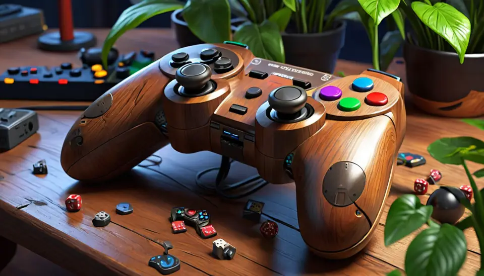
This is in contrast to what most video game companies and developers are doing today; where games are thought of as "time wasters'' or "distractions from real life", mainly relying on pretty audiovisuals to mesmerize the player while making them follow hollow actions laid out by the developers ego as sort of a Skinner Box-esque Simon Says type of affair.
I often find those games and their companies to be more about the developers themselves rather than the developer actually trying to serve the player and empowering them in their life.
This is something I want to challenge with my projects and do things differently with a novel approach.
At their core my projects are about the player themselves, giving the player an environment that helps them fulfill themselves on their own terms.
Concretely this means a lot of things:
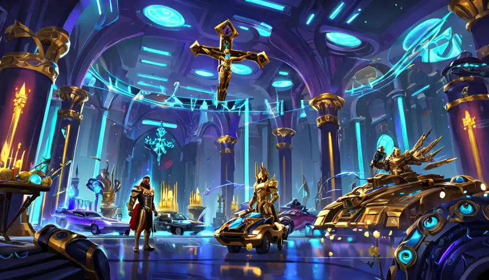
+ Players do not have to grow or grind out of scarcity; they're immediately granted abundance from the start when it comes to resources and abilities.
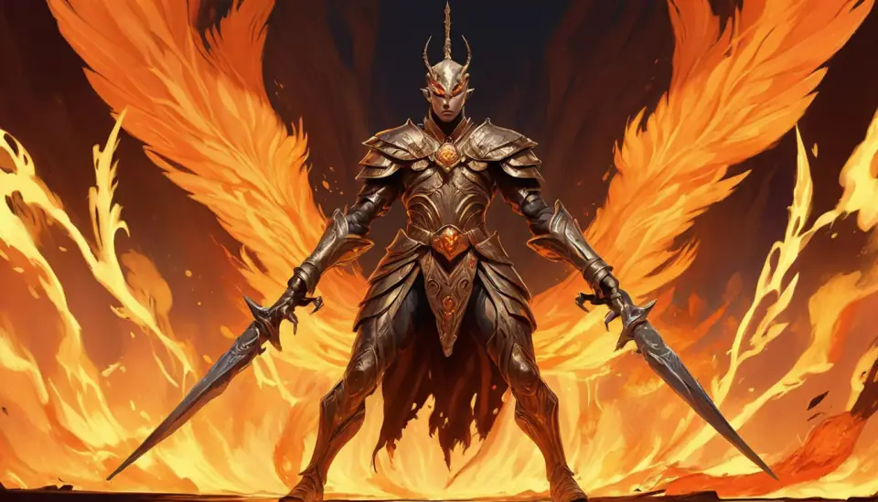
+ Players define their characters attributes; they choose every aspect of their appearance, they roleplay as whoever they want to and the story is driven by the player's own journey. The game accommodates the player, not the other way around.
+ The game is crafted to fulfill a specific human need - whether that be a feeling of empowerment by granted player access to true power or become better as a human being by learning something useful and relevant to real-life or to turn it into a source of income and make it their job that can support themselves and others around them using the game as a platform to do work. Or to socialize and connect with others to find friendship and love with other like-minded people in a safe environment that actively promotes healthy relationships.
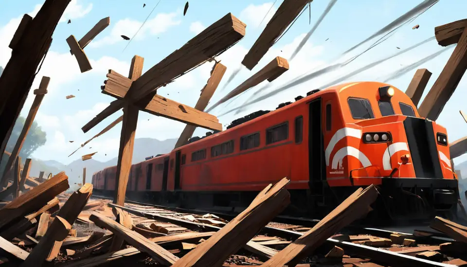
+ From the get-go, the game will directly serve to give the player what they're there for as efficiently and intently as possible. The aim is to reduce or eliminate any arbitrary limitations or obstacles that would get in the way of player fulfillment that typically appear in existing games.
Most of my games are long-haul projects that have the designed potential for infinite content expansion. My projects also run on a framework where each new piece of content is not additive play value, but exponential play value instead. It's about modular generic content that is intercompatible with all other content in the game. These multiply the number of possible combinations that can happen in the game, making old content fresh and relevant any time the game is updated.
The unfortunate flip side is that setting up such a game requires a carefully crafted foundation to support these benefits - I cannot develop them the same way most game projects are built without ending up in a situation that I have painted myself into a corner and require a massive overhaul or need an outright full restart from scratch.
I have spent the last several years doing game design work research and study to solve these difficult problems on how to structure everything, what tools to use, how to deal with their limitations, how to create a result that is feasible for a single determined person to complete as humanly fast as possible.
The projects below have had this careful game design process applied to them where relevant. Each project is a unique case, so the specifics differ per context. That said they all have some form of infinite playability or infinite expansion potential built into them.
Keep in mind, my specialization is game design - the discipline of structuring a complex interactive audiovisual software with the specific purpose to satisfy specified human needs as optimally as possible.
I essentially try to find the best combination of art, tech, purpose and available resources to create a solution where I bring together the knowledge of the human mind, knowledge of technology with its strengths and limitations, take into account the capabilities and limits of the author, among other things.
I am neither a graphics, animation, marketing, audio nor programming specialist. I do all those to the best degree I can on my own, but by no means do I have the same special skills at my disposal that other pros do, so I must work within the limits I'm given. This means I use simpler solutions than someone more savvy could do.
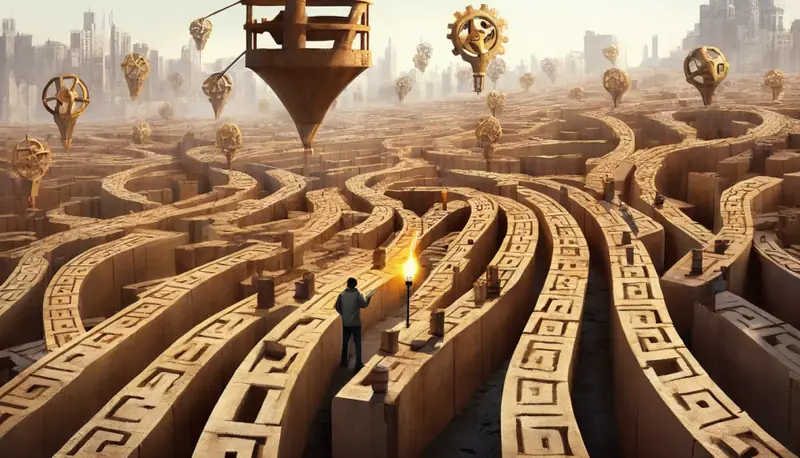
I essentially do the work of multiple complex fields alone so my progress is slow and I don’t know who could help me nor do I have any easy means to make it up for them. I feel it's impossible to get anyone onboard for a complex long-term project unless I have money to pay them with or a functioning prototype as a shining beacon of potential to show them and get them enticed that way. Problem is, said prototype for the particular game design I do still require an advanced framework so I can’t just push one out that easily.
I'm hoping that publicly posting this information may temper expectations, recognize that what I’m trying to do is indeed hard and also understand that I'm in need of support. If you can, please subscribe to my Patreon or contact me by email if you can offer help.
Projects
Here I go over each project - one-by-one - in general detail with plenty of images!
Most if not all have extensive materials intended for development on my computer and backups - whether it be assets or design documents. I’ve tried to condense each project’s presentation as tightly as I could.
You can use the Google Docs index on the left side to quickly navigate to whichever project you want to view.
..
TopVerse
Engine: Any 2D engine
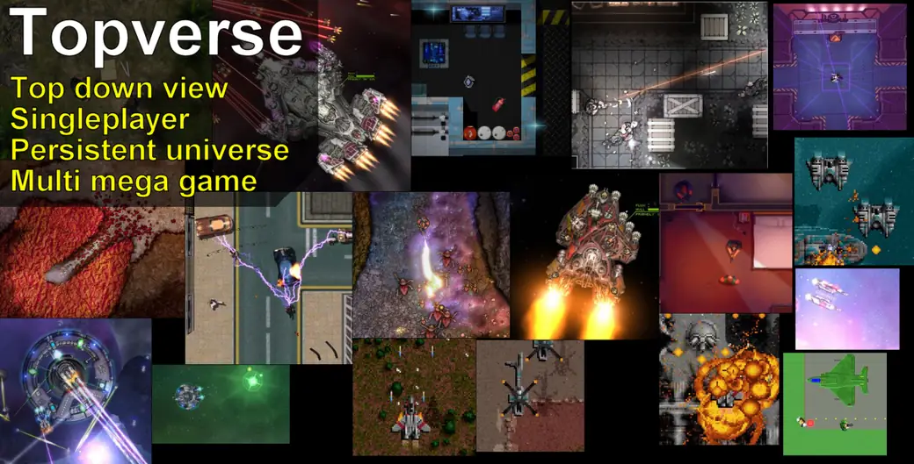
Summary:
Multiple themed yet standardized and robust top-down games weaved together into an all-in-one persistent open-world universe of procedurally generated adventure/action and excitement or relaxation and leisure - taking place on land, sea, air, space, underwater, underground, indoors, both on foot and on vehicles.
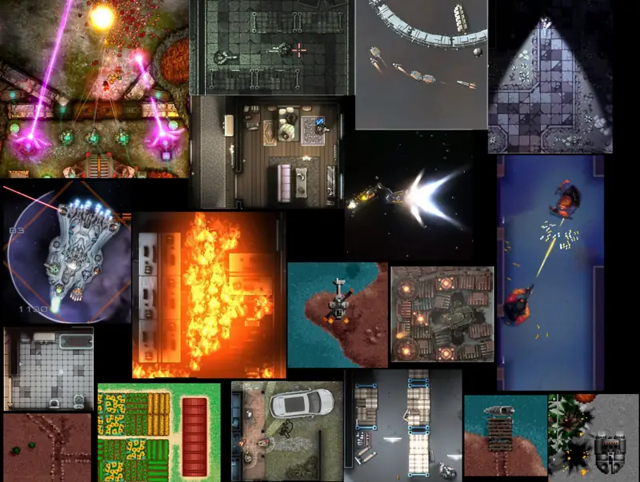
Description:
Utilizing a classic top-down twin-stick game as the foundation, the project aims to create multiple games with distinct themes. Each game will feature its own unique player character with specialized abilities and items, tailored to the specific theme.
The core gameplay mechanics will remain consistent across all games: movement with a left stick or WASD, aiming/rotating the character with a right stick or mouse, basic fully destructible levels, simple physics-driven objects, and an interchangeable player character with a 10-active item slot inventory and auxiliary ability action buttons.
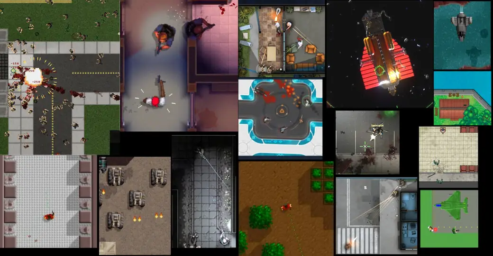
To enhance the diversity of the games, a procedural level generator and campaign generator will be employed. These generators will create theme-specific levels and campaigns, ensuring that each game offers a distinct and immersive experience.
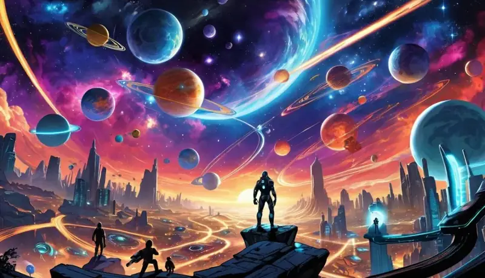
Each of these games take place in a single persistent universe where all actions affect the world on a global/universal metagame map - creating consequences that alter the output of other themed game's level and campaign generators.
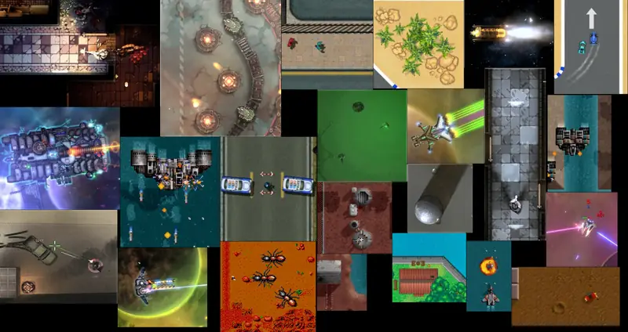
Players will play as their "group" of people in the universe and try to live in this universe - sometimes by fighting opponents or hunting monsters, sometimes building settlements or by repairing infrastructure or creating new pathways to uncharted locations, sometimes adventuring within the established cities and having fun with water guns, foam dart blasters or by tending a garden, or by blowing off some steam by crashing cars together in a crash derby!
1. What purpose this project caters to:
The idea is to create a super game - an endlessly playable persistent universe that you can jump into and have it create a game experience of your choosing - each session creating an impact on the world, altering it permanently in some meaningful way.
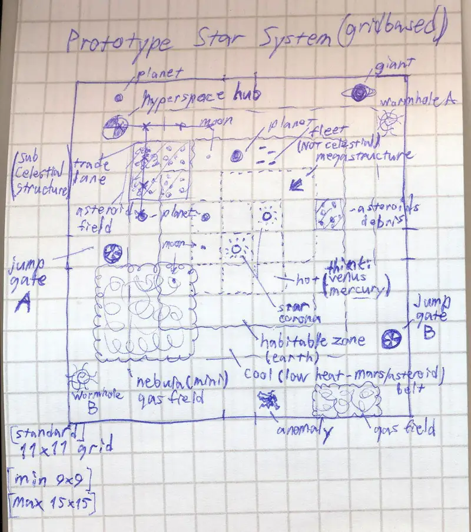
2. How it achieves this:
By creating a single yet flexible standardized top down twin stick game where all the elements are interchangeable - the player, the items, the level objects, the level/campaign generating algorithm/heuristics, the objectives/goals. This core can be themed/contextualized through tailored content to create many different types of experiences. Once one game has been built, reusing the core for all the other subgames becomes trivial. Occasionally even some of the created content can be shared among the other subgames.
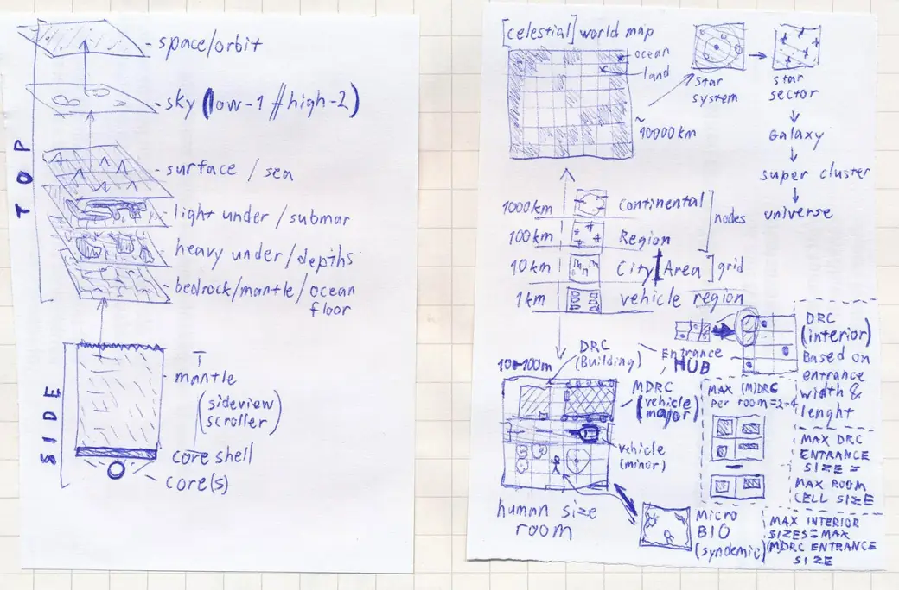
This is then connected to a persistent world map that gets updated after each session in one the super game's "subgames" and then in turns creates options to start new sessions of those games with altered parameters created by previous sessions. Although the metagame is infinite, the sessions within each game could be considered campaigns with a clear start-middle-end structure, effectively making the entire program be a campaign generator or a set of campaign generators for multiple game types.
3. What is unique/new/special about the project:
It overcomes the problem of existing single player campaign games of being predictable and finite, often ending just as the player had unlocked everything and finally learned how to play, wasting the effort of the person's commitment to take the game seriously and getting good at it.
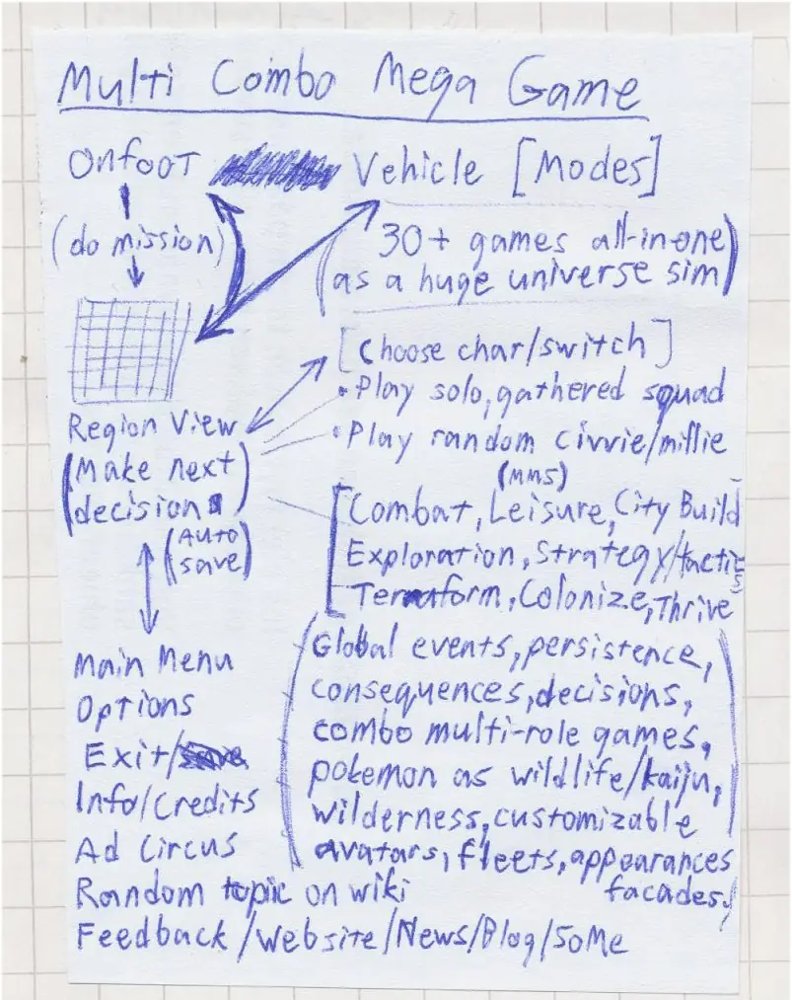
It also overcomes the issue of many games being separate silos that cannot interact or communicate with one another, usually only offering that one specific experience and being incapable of sharing its content and mechanics in other games unless they're manually implemented there too. As an example, a game that takes place entirely on foot opts to view vehicle sequences as cutscenes instead of actual gameplay - and vise versa - or just shown as nothing more than a line of text. All these games that exist in their own separate silos are limited alone and can't leverage nor benefit from each other's systems as a cohesive whole that takes place in the same universe, contributing to the same metagame.
4. What is the potential of the project:
Content in this super game is data-driven or atleast soft-coded. It means it's not tied to any specific instance or scenario, but an interchangeable component - an intercompatible module - that can be reused, remixed and reorganized with every other piece of content in the game.
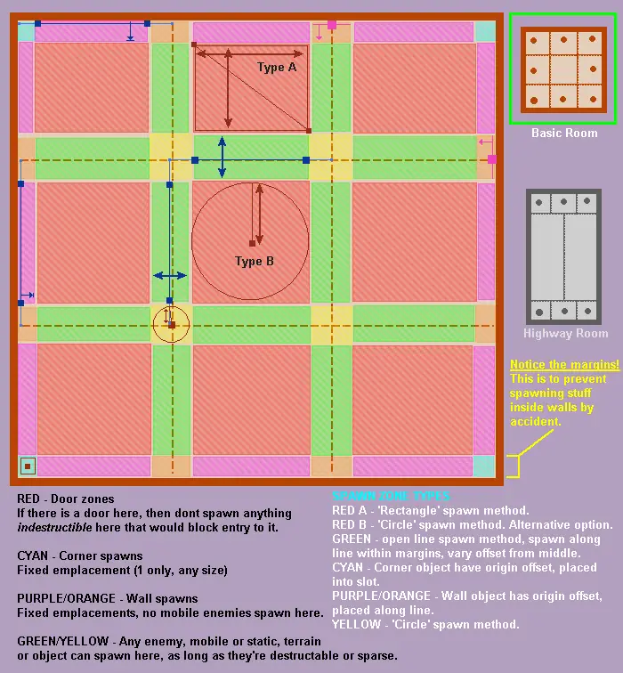
The particular phenomenon this creates is exponential multiplication of gameplay possibilities. Traditionally, most game content in old or present games use the wasteful method of "additive content" where a uniquely crafted piece or object takes ages to build, but is consumed within minutes by the player because it's only used in one specific moment or scenario it was built for.
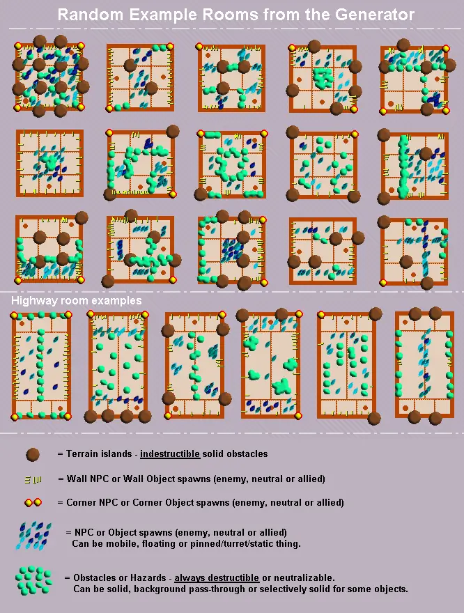
Generic customizable modular reusable content that is given context through circumstances is the foundation that creates the potential for even minimal game content to offer more gameplay hours than the time that went into creating them.
5. What inspired the project:
The general idea for a Super Game has been with me for over a decade since I used to create mods for the game Cortex Command which showed me the power of data driven content, where virtually anything I can imagine can be easily added into the game and have it show up in any scenario - both old and new - completely changing how that session would play out.
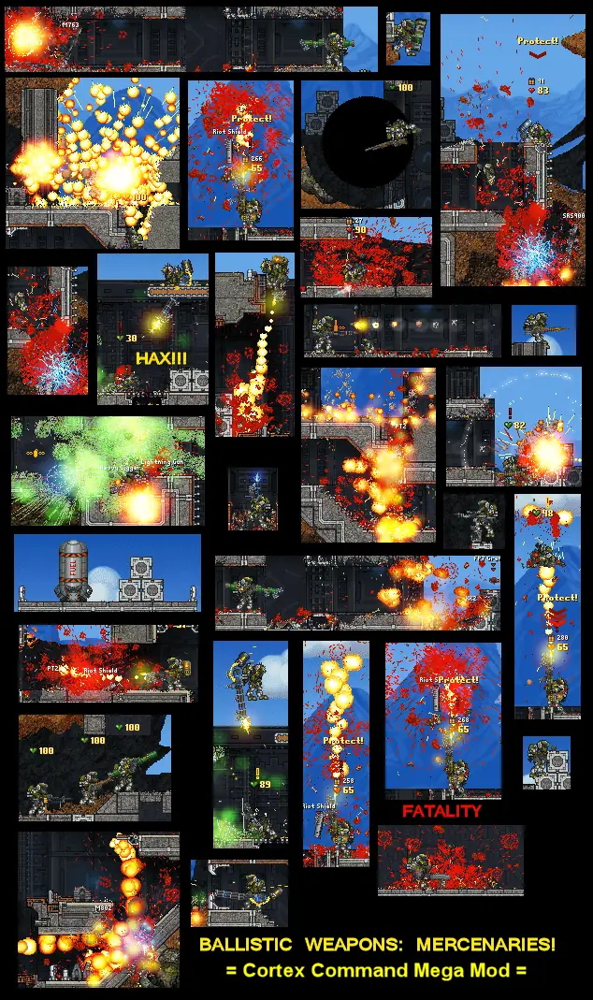
The aspect of emergent gameplay was absolutely awesome on a local level. Thanks to physics, data driven content and a flexible “buy menu” system that allowed me as a player to spawn anything into the level - with costs, standardization, balance and rules, so none of it was a cheat or a creative mode type of thing either - I could play the same level over and over, each session being different and surprising. The controlled chaos and freedom was simply beautiful.
What was lacking was a metagame structure that would accompany this content system to create a cohesive, continuous, persistent, standardized, unified world where each scenario isn't a disconnected session that gets reset to zero each time, nullifying any previous events, achievements and changes to the world. A perpetual universe simulator of sorts.
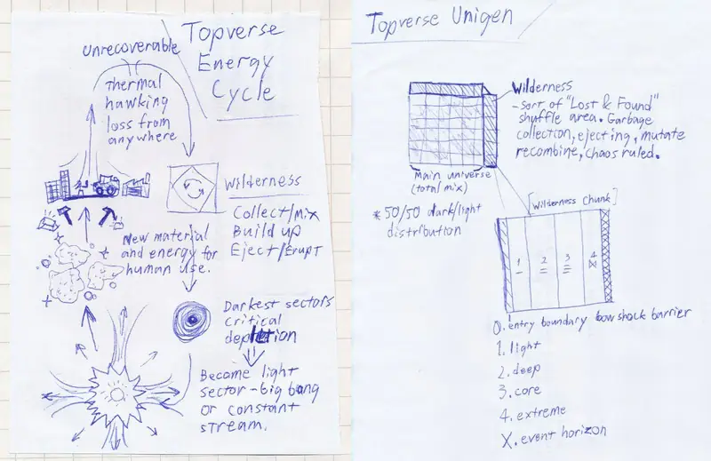
Status:
Next in line to start building after I complete releasing my asset packs and setting up other side hustles online. This project is fully designed in every aspect and verified of its feasibility. I have also fully mapped out the project’s future expansion potential. I am very confident in this project and its success.
I have already completed the logistics for mass producing assets, studied and learned the tech needed to create this game. Technically I could start right away - starting with creating a barebones minimum viable product that has been organized in a way that makes it easy to expand and maintain until its final form.
If I had funding, I could skip to start building this project today instead of doing my side hustles. I need a total of 1200€ per month for as long as possible to cover my living expenses fully.
..
AAL:Superweapon
Engine: Any 2D engine
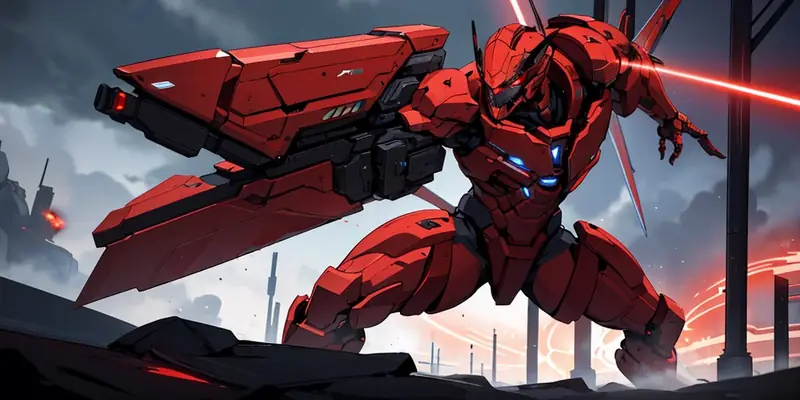
Summary:
Intense action game about empowerment involving physics enabled combat, a versatile, agile and heavily armed futuristic warrior and a vast weapons laboratory complex that needs to be raided for technology that could save a galaxy from an apocalypse.
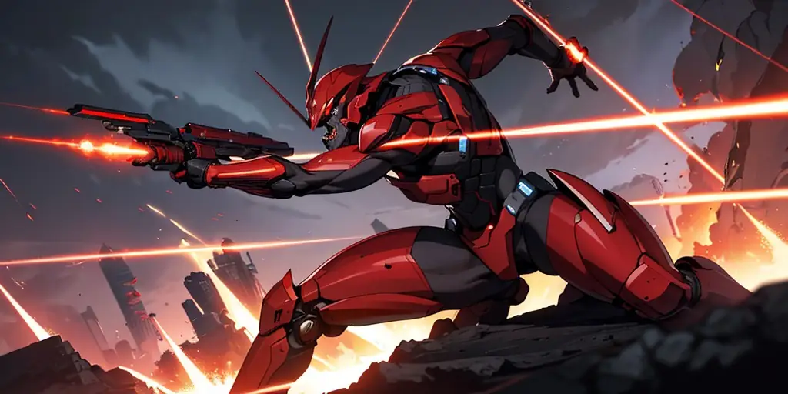
Description:
It takes inspiration from Soldat, Cryptark - both games being a side view sprite based 2D action platformer shooter with a free-aiming keyboard+mouse control scheme.
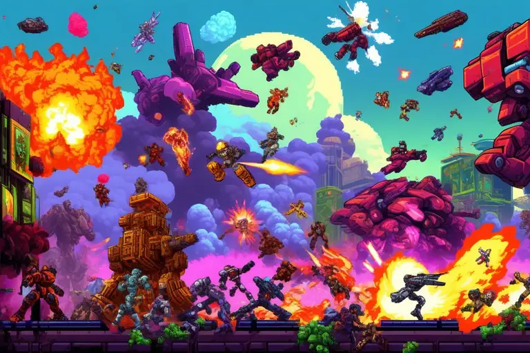
Player characters can freely pick up, drop and throw weapons, dual/quad wield them and do combat with satisfying physics driven interactions like knockback, recoil, exploiting environmental hazards, projectile pushback, explosions, gravity and more. Gibs, ragdolls, slow motion, particle effect carnage, environmental destruction - all the good stuff!
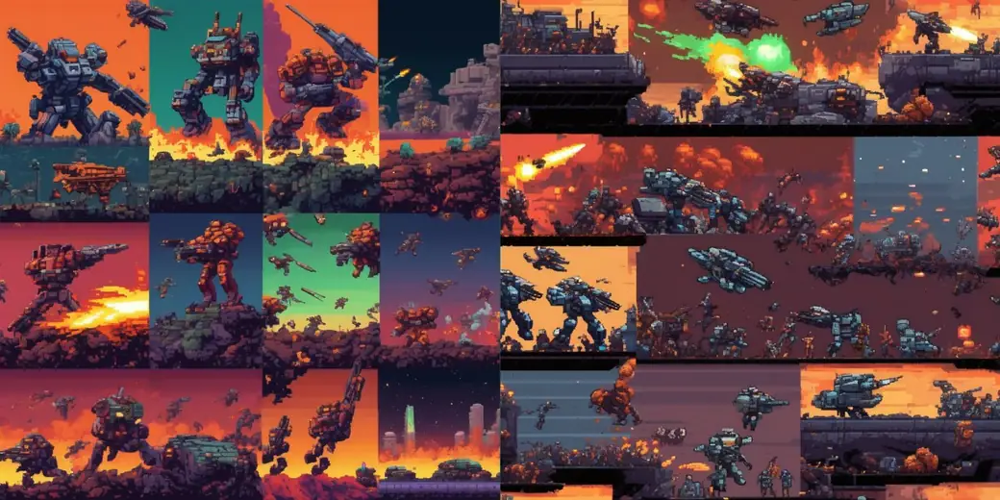
The game uses a special metagame that randomizes level order, randomizes unlocks/pickups in levels, randomizes enemy types/decorations/hazards and their placement/quantities inside the levels.
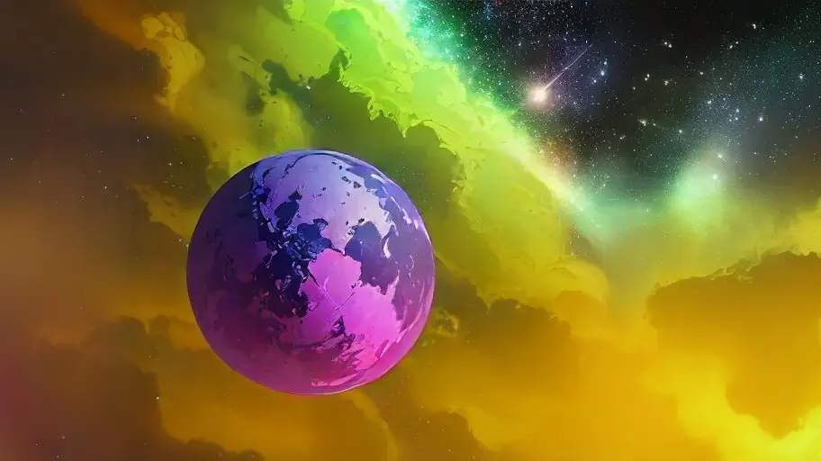
While the campaign would be a replayable affair with a total set of levels that have hand-designed terrain and spawn areas, each playthrough would be totally different because the order of the levels would be random, the order of what the player finds in levels is random, what they unlock is random and enemies/hazards/opportunities they face in what order would all be random.
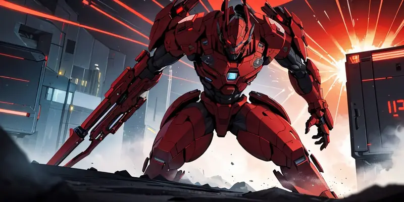
This core game structure is something that I've always wanted every single player campaign and roguelite to be like for any game out there. Normally I play a game once and then I know what it will be like for every next playthrough I'd want to do on it - every beginning is the same, the order of levels are the same, the items/weapons/upgrades/enemies/hazards/abilities... all are encountered always in the same order more or less. It's more or less the exact same session I just played. I have a need for variety and this sameness problem usually makes me abandon a game.
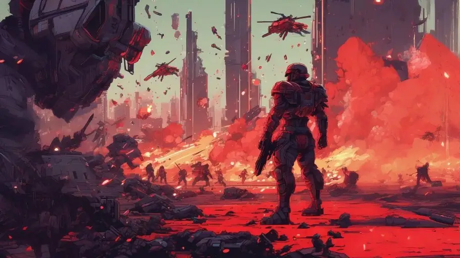
This game does not use procedurally generated levels, at least not terrain wise - even if there is potential for it theoretically - no, instead my goal is to create an example for how to organize a old-style game and its uniquely hand-made content in a way that maximizes its lifetime and fully utilizes every permutation of how this content could appear in the game for best impact and value, lifting any restrictions that would normally make something scarce into something teeming with abundance in terms of surprise, replayability and a better structure for introducing new content that can enrich an old campaign massively.
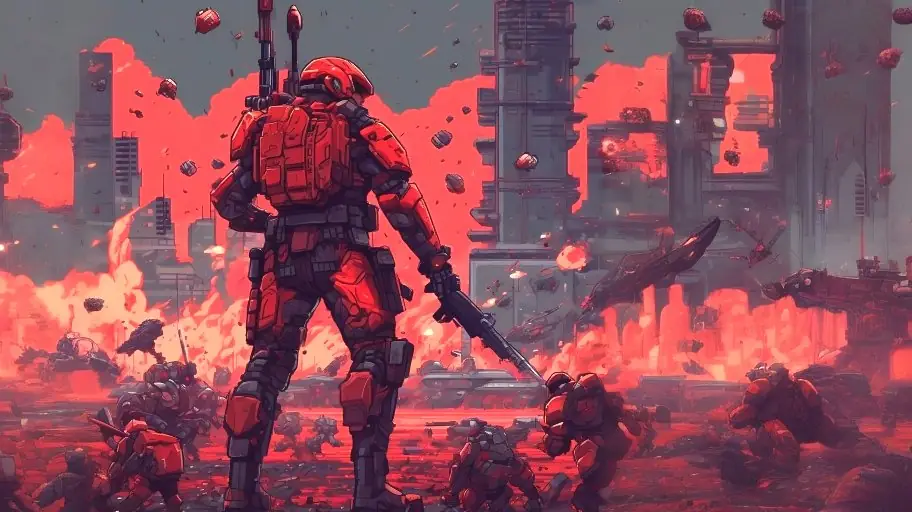
1. What purpose this project caters to:
True feeling of power. The player by all means is overpowered from the start and will only get more varieties of overpower as the playthrough of a game progresses. A secondary purpose is to inspire the game industry to reconsider how they build their games to encourage developers to fully utilize any content they create instead of creating arbitrary limitations that drastically shorten the gameplay value and longevity of their games.
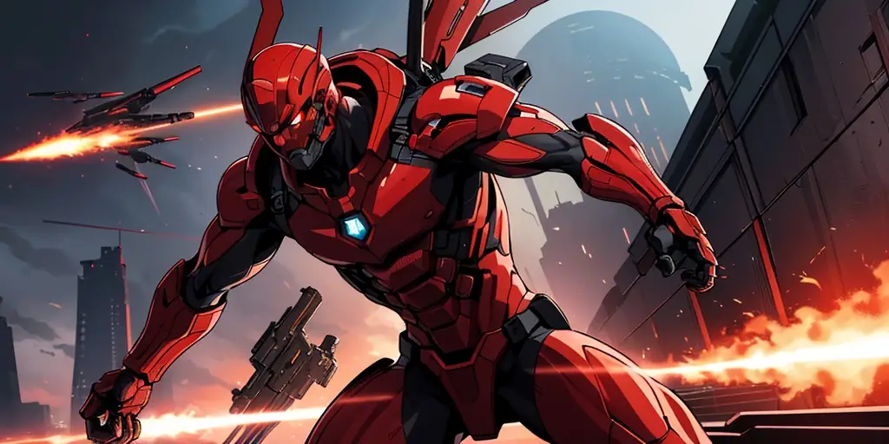
2. How it achieves this:
Regarding empowerment, the player character's warrior avatar is capable of speedy movement, jumping, climbing on walls, infinite flight, dashing in any direction. They can either wield 4 slots worth of weapons at once that all can be fired simultaneously through 4 individual hotkeys or collect, carry, use and discard a stack of about 20 weapons that the player can cycle through at the press of a button and keep using it until it breaks or runs out of ammo.
Defensively, player can take a lot of damage before going down - and when they do, they blow up everyone around them with a small nuclear blast as revenge. Player can also activate an infinite slow-motion ability to slow down time for better control of hectic situations whenever they desire.
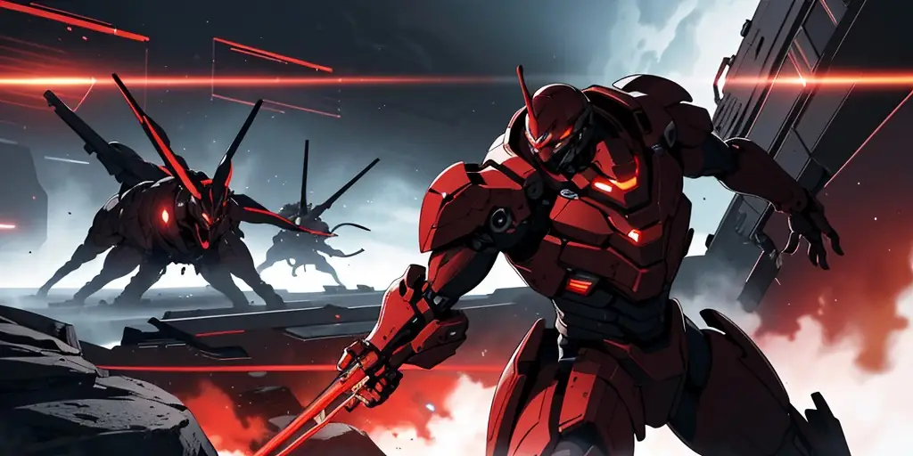
Any weapon, ability, item or function the player has access to is powerful enough to obliterate enemies within a second. Some weapons may be outright superweapons that can annihilate entire rooms or sections of a level just like that. Player may also receive outside support as supplies, artillery strikes, ICBM attacks or autonomous support drones.
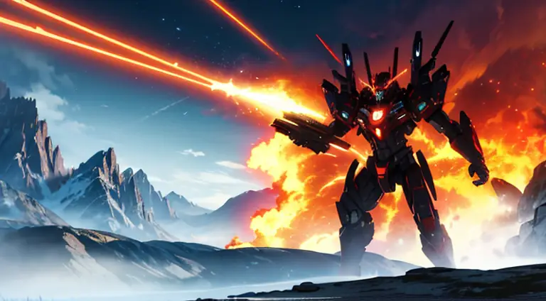
Regarding the metagame as an example for other developers, the idea is to talk about it in my blog, on the game's website, in social media and spread its illustrated/visualized design blueprint to anywhere where game developers may be on the internet.
3. What is unique/new/special about the project:
Many things. Unique weapon system, prolific use of free game assets, the metagame structure as already mentioned and the true fulfillment of an actual power fantasy.
I've devised two different weapon usage systems I've already explained, but the weapons themselves use a unique concept of "firing frames"; a series of universal gun platforms or "firing frames" that have a box-like external vague shape with hidden internals.
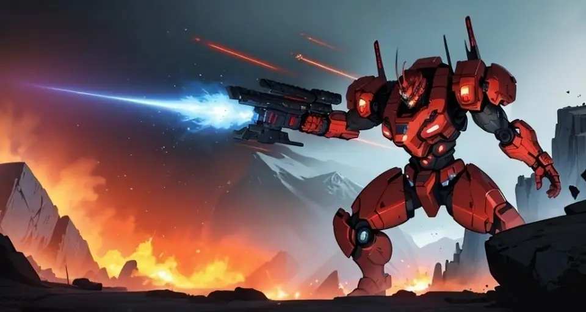
Visually this allows these firing frames to adapt to becoming any kind of gun that can fire any kind of projectile and fire said projectile(s) in any configuration. They're highly customizable high-tech futuristic variable weapons that can be easily modified with attachments or scaled up to fit vehicles, mechs or even battleships.
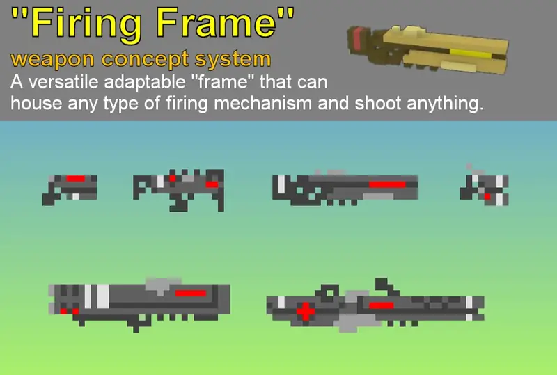
Although the graphics for the firing frames are custom made by me, the rest of the graphics of the game are sourced from abundant free game asset packs. When it comes to pixel-art, there are certain established size standards that most art revolves around; like the 32x32 pixel grid.
What I have done is taken and adapted art to make it unified to that scale where necessary, created automated scripts to create a set of basic animations that need only a single image.
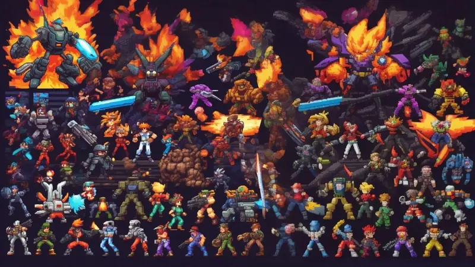
All this has the cool effect of creating a Mugen-like art style that one could find in a community-created mod collab and by making mass production of new game characters, props, hazards and items possible and fast.
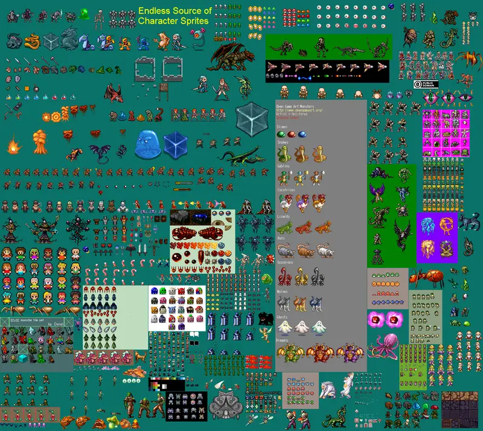
When there's already an enjoyable foundation of physics driven, gib enabled, particle effects boosted and destructible environment fueled gameplay, those seemingly basic pieces suddenly become quite exciting, since I can focus on giving them interesting parameters and behaviors without having to worry about art at any point.
It also has the bonus of being open to modding or community contributions, where I can turn people's pixel-art sprites into new enemies or objects that will appear in the game's infinitely replayable randomized campaigns.
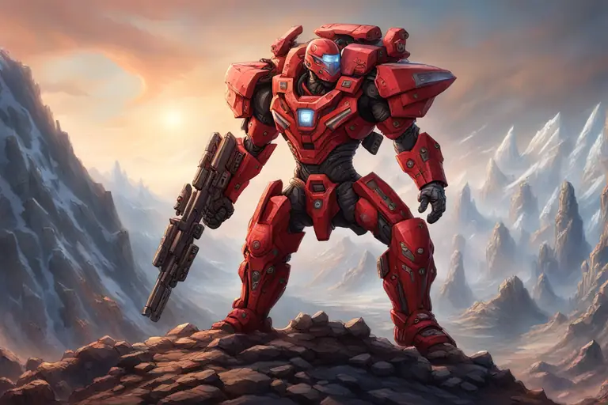
The last part about an actual power fantasy is something that paradoxically has been done so little in the games industry despite constant anecdotal mentions of how "this or that game is a power fantasy" when it really isn't.
Usually the player's movement is limited, players can die quickly and suddenly, players are placed upon a myriad of restrictions on what they can and cannot do, players are kept barely supplied enough to get past a challenge, players are not given choice or freedom regarding many things.
Players may also start weak and are required to unlock or earn power, which may be fine for a first playthrough, but having to reset and redo the same experience again from ground up for any subsequent playthrough is not enjoyable.
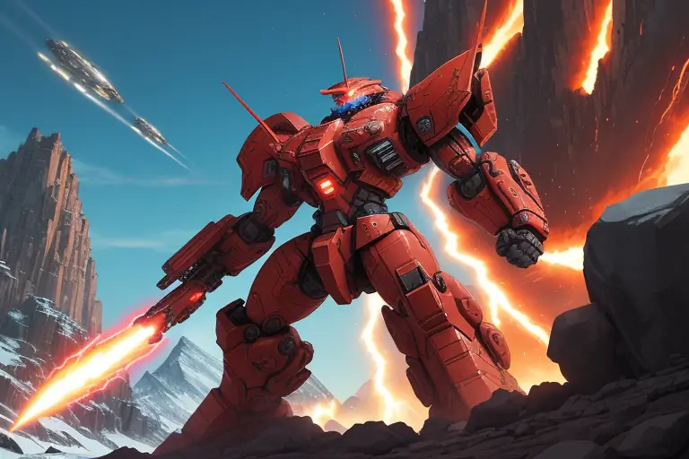
My format and design aims to challenge that status quo by providing a true power fantasy without feeling meaningless by reframing where player enjoyment comes from during the game, hopefully inspiring future developers to see more potential in abundance-based game design.
4. What is the potential of the project:
The way the campaign and its world map is built makes it possible to add more and more levels into the campaign, virtually forever.
Same with enemies, items, weapons, props, hazards and backgrounds.
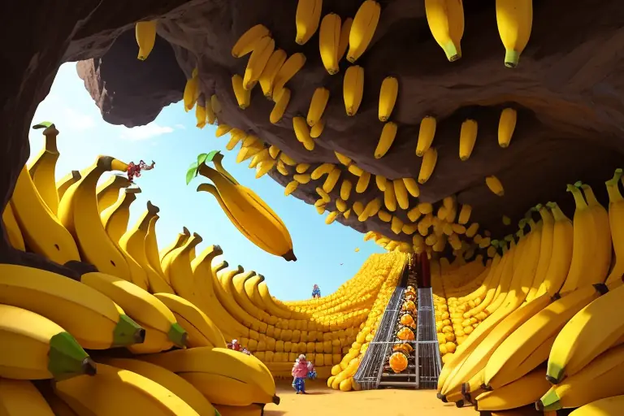
Any piece of content is just added to its specific list/pile that can keep growing infinitely, with each new content piece increasing the number of possible gameplay interactions in any campaign exponentially.
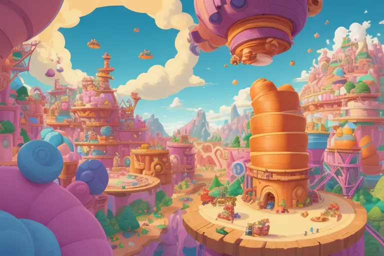
Even the addition of a single new weapon or enemy is enough to give a reason to replay the campaign again because of how big of an impact it has due to the game's metagame campaign generation system.
5. What inspired the project:
Side-scrolling 2D action games are my personal favorite. Super Metroid, Super Mario World, GBA/SNES Kirby games, Soldat, Cortex Command and many more, be it with pixel-art or otherwise, the third person gameplay in a side view perspective is really satisfying for some reason, especially if physics and momentum are involved.
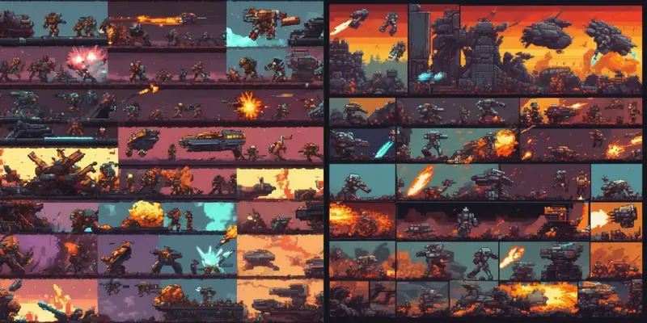
I also love games that have a versatile character that can change themselves based on items they can find, pick up and discard at will - without being forced and locked to be one specific specialization for the entire game.
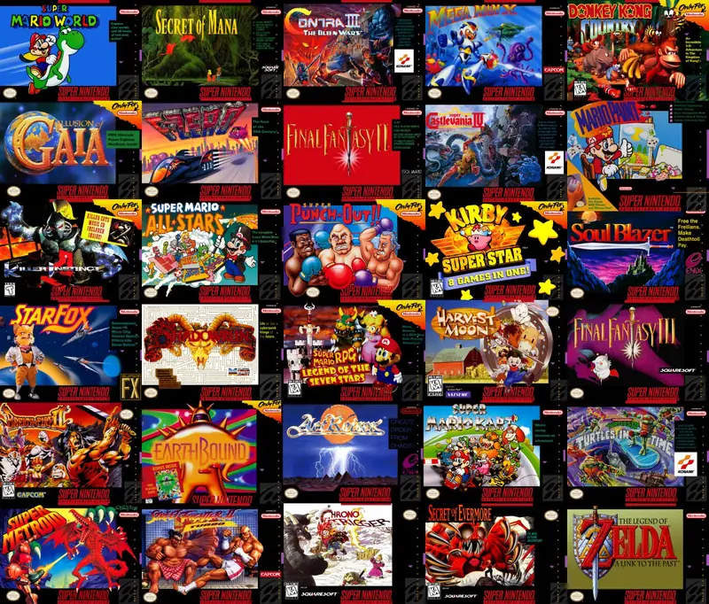
I'm also a great fan of pixel-art sprites and seeing the massive libraries and galleries of fan made pixel art assets in places like OpenGameArt.org or similar excites me a lot. I suspect there is a hidden hope that each asset author has, that some day those assets would be picked up and used in something really great and big - like an all-stars super game - fulfilling the desire that probably sparked the creation of those assets in the first place. I envision this game would be a platform for fulfilling that dream.
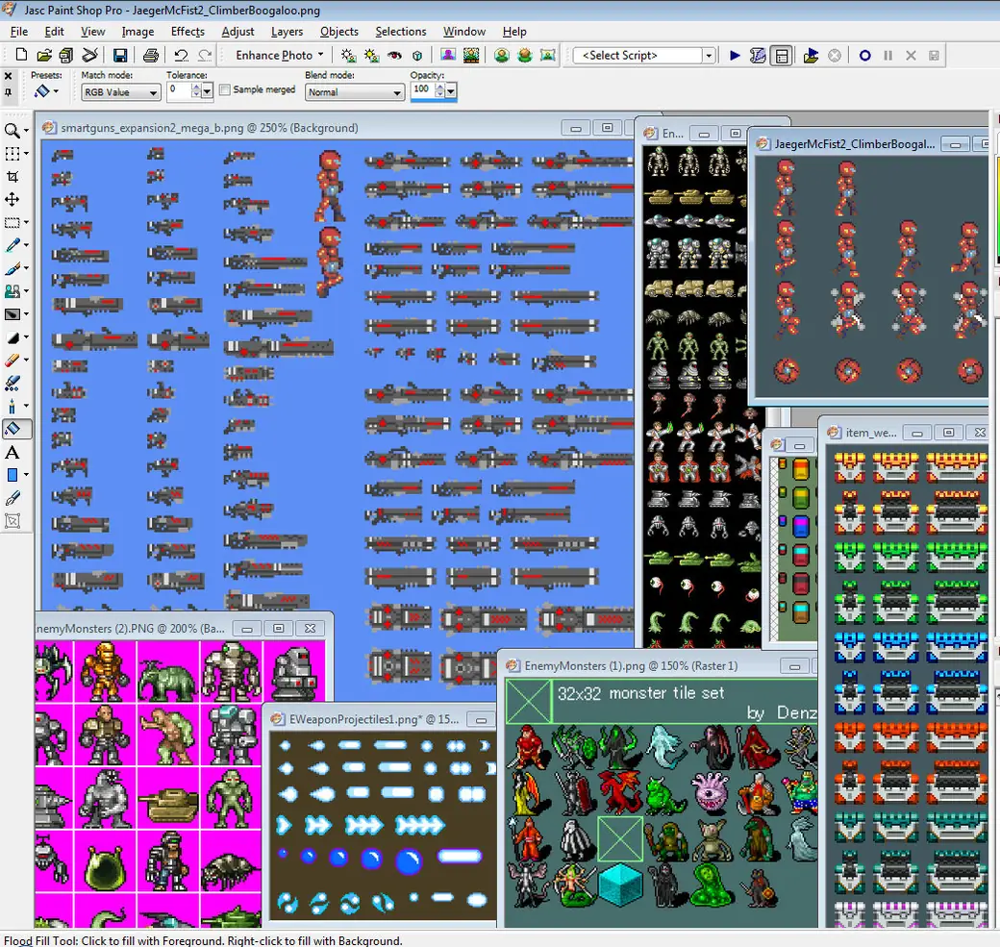
Status:
All necessary design work is already complete, it's only a matter of picking up the game engine and beginning to code it, starting with a bare-bones minimum viable product version first.
Graphics wise I already have an enormous library of game assets prepared and processed for this project. I'm still working on the weapons sprites - they're actually mostly done, totaling to about 216 ranged weapons. You saw some of them in the picture above.
They still lack shading, auxiliary/addon component sprites which I'm drawing right now, as well as assembling an equally large arsenal of melee weapons too using a large selection of components I've already drawn.
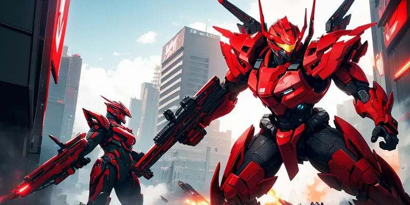
I'm first aiming to finish and release these as asset packs on my stores as a side hustle, which could hopefully fund the development of this project and my other projects if it finds its way to interested buyers.
..
RoomSpace
Engine: Any 2D engine
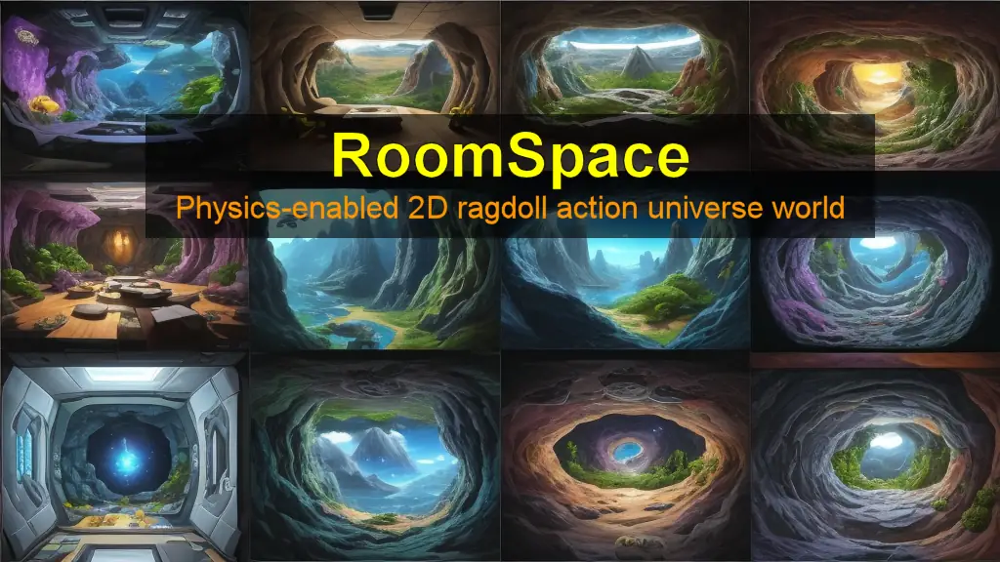
Summary:
A persistent and dynamic 2D open world made from thousands of terrarium like rooms with local climates that connect together to form a giant living universe - featuring versatile physics ragdoll human characters that defy gravity.
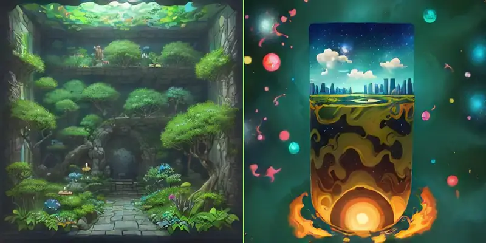
(Right side: What a “planet” in this side-view 2D universe could look like.)
Description:
Welcome to a universe of interconnected rooms, each decorated with terrain, objects, characters, vehicles, critters, items and more - organically creating various natural, artificial or mixed biomes. Each room has intricate interior sub-compartments too that allow the player to go exploring the deeper layer of a particular main room.
The rooms themselves are like 2D terrariums/aquariums/dioramas viewed from the side, where a dynamic climate system imbues each room with local elements such as weather, forces, gravity, flora, fauna, materials, liquids, gasses, solids, and more.
The unique feature is the seamless interaction between rooms, as the environment and events of one room influences the adjacent rooms directly.
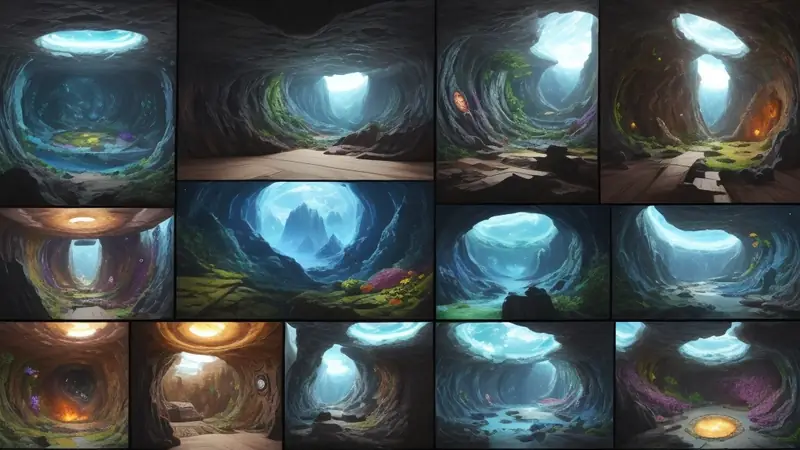
You and all others characters in this universe are whimsical flying/floating ragdoll humans, endowed with the ability to interact freely with any object, any item and any element. It's all driven by 2D physics gameplay.
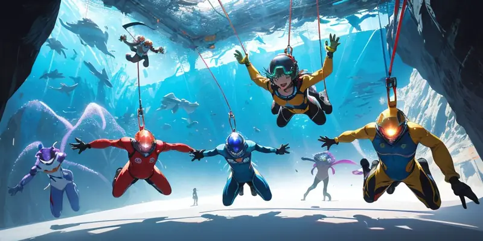
Any living or powered thing has the ability to resist gravity and project a force to move themselves about, allowing free movement anywhere in the room, even if gravity may be pulling everything else towards a particular direction with varying intensity.
The transition between rooms is facilitated by doors embedded in the walls, reminiscent of the iconic mechanics found in Super Metroid.
This innovative setup ensures a fluid and engaging experience, where the ever-changing dynamics of the interconnected terrariums create a dynamic and immersive gameplay environment.
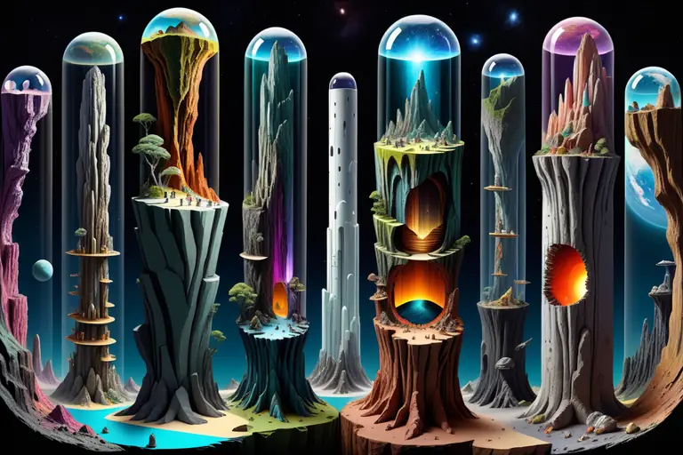
The expansive network of interconnected rooms intricately constructs a cosmos, akin to a meticulously organized universe. Within this cosmic expanse, planets are arranged in a cup-like fashion, descending vertically, mirroring a side view of Earth.
The planets encompass distinct zones, including orbital, air, surface, underground/underwater, mantle, and core areas. Additionally, outer space is delineated in a top-down grid structure, subdivided into regions that further branch into star systems, galaxies, and superclusters.
This universe adheres to a fundamental principle of equivalent exchange of matter, resembling the laws governing our reality. In this cosmic realm, the immutable rule dictates that no matter can be spontaneously created or annihilated; rather, transformation occurs through diverse natural and artificial events. This principle aligns with the dynamics of real-life existence, where entities can only alter their shape and type within the boundaries of the cosmos.
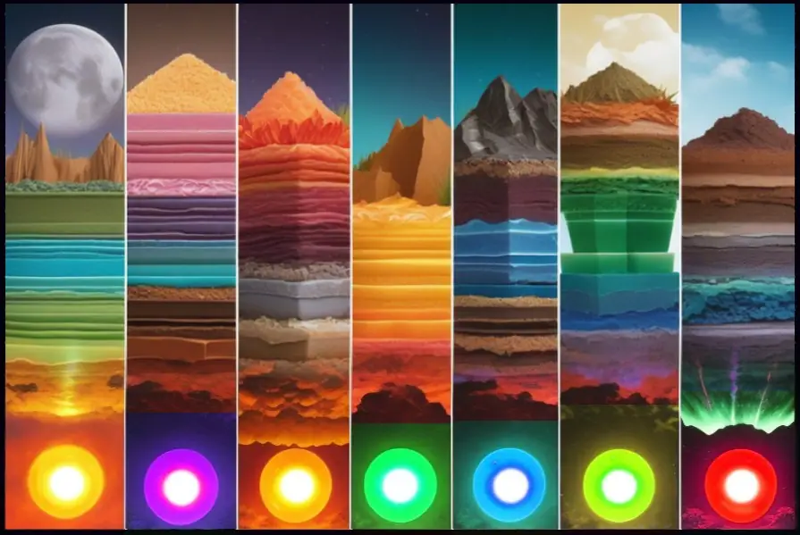
While the rooms and doors are rigid, indestructible, their content are physics enabled and have destructible terrain, there are dynamic liquids/gasses that can flood or flow through the room, creating streams/wind or humidity or other effects upon the room's parameters, altering its dynamic climate and changing its biome.
Players can alter room climate and biome through their actions in the game, turning deserts into forests and back.
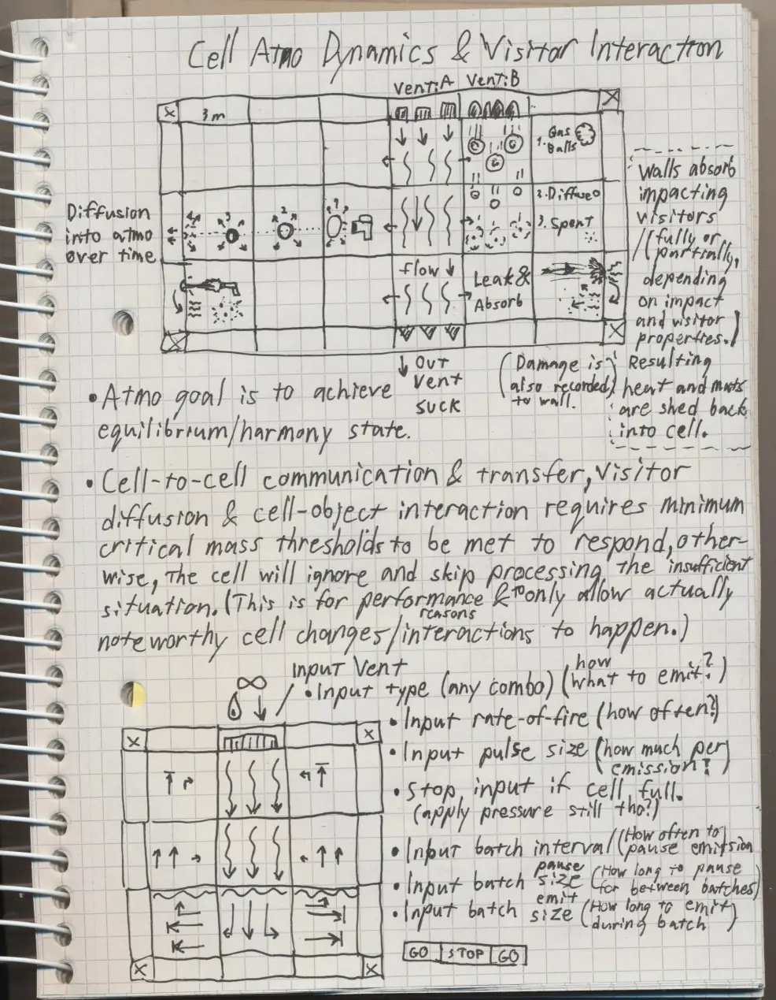
Game-wise, this is an adaptable universe that acts as a platform for virtually infinite contexts. It's all a matter of setting up game objectives and metagame logic and placing specially prepared content.
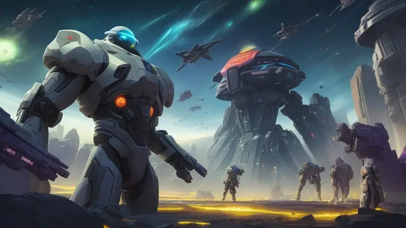
More exactly, it could be made into a conquest game where the player tries to master the universe by building up their people as an exchangeable hero, fighting hostile factions on ground/air/space with an aim to eliminate all threats.
Or it could be made into an adventure game with a quest where a reincarnatable hero will attempt to complete grand achievements in the universe.
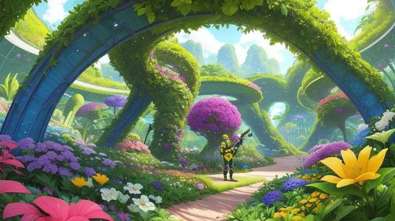
Or it could be about being an engineer/gardener that tries to terraform and cultivate the worlds into a beautiful paradise/eden.
Or it could be reframed to play as an investigator/bounty hunter that uncovers wicked mysteries of the universe and confronts eldritch monstrosities.
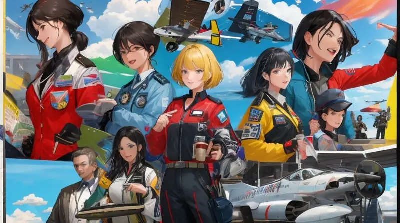
Or it could be an omni-game that is all of these and many more - similar to TopVerse, functioning as an infinite procedurally generated singleplayer campaign generator with multiple modes, but all taking place in the same seamless universe instead of separate compartments like it would work in TopVerse.
1. What purpose this project caters to:
In itself, RoomSpace is a platform to simulate a living/breathing seamless persistent universe. In terms of satisfying fundamental human needs, it could be configured for empowerment, socialization, self-expression, learning, challenge or be a medium for a message that is best presented by a universe simulator or parts of it.
The core of RoomSpace could be made into multiple separate games that focus on a specific theme/context or a single big one that has all activities and they're merely activated by where the player decides to travel in-universe and what they will do there for that session. Sort of like how I would wake up in the morning on a free sunday and decide what I'd like to do that day; be it relaxation, excitement, action, adventure, work or pondering.
2. How it achieves this:
Technical-wise at its core, the program works by only actively simulating the current room the player resides in. Everything else only exists as a semi-dormant node, as a file in a folder that only receives changes when it is specifically invoked.
There is a metagame/universe events thread/algorithm running in the background that updates the universes adjacent and far away rooms on a necessity basis and generates events for the player's region or the room they're in based on the properties of the rooms and the regions they make up.
If player goes to another room in the network, the universe may calculate and apply changes that alter the new room's contents/climate/occupants, while unloading the previous room from memory - thus making it semi-dormant - but saving its state and apply its data to the universe events simulation that may or may not trigger an event that will happen upon entry or some time later in the new room.
3. What is unique/new/special about the project:
Characters behave and move sort of like fish in an aquarium. There is indeed gravity that pulls objects and characters downwards, but everyone is able to fly and resist the gravity enough to navigate to any point in the room. It's sort of a hybrid between a top-down and side-view 2D games.
The basic interaction systems are fairly robust and varied. There's physics, momentum based movement, gibs/gore, particle effects, lighting, physics ragdoll player characters are able to equip items/gear/clothes/armor, the different elements of nature play a major role in gameplay - like temperature, humidity, radiation, magnetic forces, gravity, physics joints, mass, sharpness, friction, etc.
The very feel of the game is enjoyable just thanks to its basic intractability alone, not to mention combat interactions that involve physical melee and ranged weapons that can have physics enabled projectiles, recoil, collisions, knockback and more.
There's advanced features like vehicles and even giant starships/megavehicles that players can construct, modify and pilot between rooms. It's always been a dream of mine to create an experience of having that mobile headquarters mothership seen in the story of Mobile Suit Gundam, Gundam Seed, Gundam 00, Gundam Zeta and ZZ, where a group of people travel together on an epic adventure and overcome dangers and foes using big machines and powerful awe-inspiring technology. It's even possible to do boarding actions in ship-to-ship combat.
There's a heuristics driven smart procedural generator for the entire universe and its regions, down to celestials and the individual rooms that they're made up from. Unlike many poor attempts by others making procedurally generated worlds, this one is vastly different because it doesn't focus on artificially creating specific biomes, but instead adding materials and applying environmental conditions to them that ultimately shapes that room or that region to take on a climate/biome that is natural/organic.
It does this on multiple layers of the universe, starting from distribution of matter/antimatter and finishing at a local room by deciding how the props are placed in it with each regional, galactic and supercluster state affecting the final result of the individual room. It might sound complicated, but it's really just a matter of IF statements with a logical chain of order.
4. What is the potential of the project:
There are already many pseudo-universe simulation games like Minecraft, Terraria, No Man's Sky, Starbound, Stardew Valley, Zelda Breath of the Wild, Signs of Life, Astroneer, Factorio and many more that I think are a merely a glimpse of something far greater, bigger and better.
However, despite their data-driven content system, procedural generation of worlds or characters, open world design, versatile and dynamic transformable player characters and many fully implemented randomization systems... none of these get to shine to their full potential, sadly. The structure of the metagame still ends up following the old traditional rigid formula of a scripted movie experience which often clashes with the gameplay and causes ludonarrative dissonance where gameplay and story end up contradicting each other in a way that ruins immersion for the player, leading to a worse overall experience.
Negative effects include:
- Shattering of immersion.
- Convoluted story moments that force the player down a specific bottleneck/funnel when the rest of the core game experience is an open world with an emphasis on freedom and choice.
- Underutilization of game content due to exclusivity to certain story moments only or other arbitrary reasons that restrict where and how content can appear, who or what the player character should be or is not allowed to be.
- The general inflexibility of the game experience on multiple playthroughs where despite the openness the general session still ends up following the same script as the first playthrough with no real room to deviate from it thus making all that randomness feel meaningless.
However, I've found a solution with game design that can transcend beyond these problems and create a game with meaningful infinite playability of which the world has never seen before. This project can revolutionize game design and the games industry in a major way, especially when paired with intelligent and ethical monetization practices and models that can not only make a project like this massively profitable but also sustainable for decades if not more.
Unlike with the games I've mentioned which has a finite scripted route(s) that you complete - usually with a final boss battle in the end - this design framework puts the player's own adventures as the focus of the story that can be dynamically generated to create a new unique campaign in the same universe an infinite amount of times, with the outcomes of every previous campaigns carrying over naturally for every future campaign generated by the system.
It would be like playing something akin to Skyrim, Mass Effect or Fallout, but each time you completed an epic adventure, the system would generate a new one in the same universe to continue where you left off, with a clear beginning, middle and end for each session, each featuring old and new locations, old or new foes/challenges, while having an entire breathing universe filled with dynamic side events that may surprise, sidetrack or twist the campaign in unexpected directions. It would be a game that you could truly play forever, truly expand endless with new modular content that is intercompatible with all previous content and multiplies the possible situations that can happen in the game exponentially!
Alongside, the game could have a thriving modder/creator community and a marketplace/portal that gives creators a way to make a living by supporting the game with new creations and selling or monetizing them in some way.
This could be in the form of premium content, Patreon dev support subscriptions, Netflix/Nebula style creator group platform, player requested commission orders or any other kinds of third party services that others could provide that revolve around the game.
This can be a huge new sector for jobs, dream fulfillment and wealth for all that participate in the project.
If anyone is familiar with the modding scene for games like Starbound, Skyrim, Subnautica, Cortex Command, Fallout 3/NV/4, Terraria, Starsector, then imagine if that could become a source of income for all those creative people on a massive scale thanks to a specifically designed game that makes creating content easy yet standardized and unified.
It's the same way the Unity Asset Store marketplace already works and any other places like it, especially with specific submission guidelines that ensures quality and a set of tutorials/education that helps people know how to make things as best as possible.
5. What inspired the project:
Inspired by a vast number of games I've played over the years. I mentioned some of them in the answers above, but this is something of a magnum opus I've been developing with passion for a long time.
Oddly enough the specific terrarium/aquarium room based universe with ragdoll characters comes from Floppy Heroes, which is a far simpler game in comparison.
Floppy Heroes - a simple gladiator-like game about two or more opposing ragdoll characters with armor and weapons that can freely fly through the air but can't control their rotation. They try to smartly collide with each other, trying to deal damage to others and try to receive no harm themselves by careful positioning and timing of their limbs/armor/swords, while protecting their weak spots such as exposed skin or head.
There's a basic VS mode and a 10 level campaign gauntlet against randomized opponents with progressively more dangerous gear. That's it. You can unlock and customize your character with armor and weapons, but there is no further metagame or progression besides that.
Gameplay wise I found it really satisfying despite its simplicity but I also felt the game was too simple and restrictive to be enjoyable beyond a few sessions with it.
Initially I just wanted to make a version of that game with the ability to rotate the character freely during combat and have guns and other futuristic equipment along with more interesting levels with simple hazards and props, but felt the game would need something more substantial structure-wise to thrive in the ever competitive market of the games industry.
Looking at some of my older design documents and ideas - especially for a universe simulation Super Game - I suddenly saw an opportunity to fulfill that potential in this seemingly simple ragdoll room battler frame.
The idea evolved into something that can start off as this simple low gravity ragdoll combat game in its early versions, but then gradually grow into a mega project by having a the initial framework for the game well planned ahead beforehand that will be easy to expand upon without ending up in a situation where I'd paint myself into a corner regarding early technical decisions that would require an engine rewrite from scratch later in development.
Status:
Regarding design work this game has extensive documentation complete for it. It is about 95% done, with the last parts simply being the design of the universe/world generation heuristics tree algorithm that I already have a rough outline ready anyway. It would take roughly 2 months to complete the design for that part.
The other last part is the technical construction plan for the greater project, i.e what does the minimum viable product need to become playable, how to continue from there regarding features, content and systems addition and what does the roadmap look like from start to finish regarding completing the entire project to its full potential.
Graphics wise, I have already completed a new type of a standard for a human character and their accompanying skeleton version, featuring advanced customizability regarding body features, facial features, facial expressions and a templates for clothing/armor system, as well as a size/scale standard for objects items.
I've even prepared a guided art tutorial package that teaches everything a person needs to grasp the art style and technical standards to make graphical assets for the game.
What's still missing is clothes, armor and many object sprites, especially weapons. I have yet to continue working on those because I've been busy with other faster projects in the meantime.
Technically the basic prototype for just a single room battler game could be done within a couple months. It's just about setting up a ragdoll character, creating bare bones empty room level, creating some very basic held weapons and worn armor pieces and coding in a basic logic for a game manager that sets up the level and characters, with a reset. From there, it could be expanded with newer more advanced features by swapping out the old ones and replacing it with robust frameworks that have the foresight of upcoming features. Eventually, the game's systems will grow into a fully featured universe simulator - which then will be ready to fulfill its destiny as described above.
Overall, it is an ambitious project and will likely take quite a while to code even with all the design work already prepared for it. Depending on the coder, it could be a matter of several months or a few years I'd estimate. Meanwhile the graphics would take roughly a similar amount of time. But the outcome would be beyond amazing so it is certainly worth the pursuit no matter what.
Still, due to lack of funds I'm forced to work on something faster and simpler for the time being.
..
Standalone
Engine: Any 2D or 3D engine
Summary:
Become a superweapon as you pilot a powerful and fast mecha and its strong versatile mothership against giant monsters and machines in a semi-permadeath assault game.
Description:
Player is an AI onboard an all-environment self-sustainable deep-space von-neumann probe assault battleship superweapon. It is equipped with a mecha bay and a linear catapult to launch a separate pilotable mecha superweapon.
The AI can split its consciousness into this mecha, allowing it to switch active control between the mecha and the battleship. During this control switch, the battleship goes into auto-pilot mode while it's not being actively controlled. If the mothership is ever lost, the unique AI being onboard it will permanently die with it.
The mothership and mecha form a tandem superweapon combat unit dubbed "Standalone".
They were created by humanity as a final measure to fight back against a trans-galactic menace of various loose groups of so-called “Space Monsters” that threaten to destroy anything and everything in their path for no real reason.
The Space Monsters are not one entity nor do they really belong to any one group or have the ability to reason. They are a collection of many rogue monsters, robots without masters, rabid animals, infected zombie fleets and other similar groups of beings that merely consume everything in their path, corrupt the worlds they touch, multiply uncontrollably and spread throughout the stars endlessly. If left unchecked, they will ruin the entire universe.
Any intelligent race - humanity included - could eventually become extinct if they reach the milky way galaxy. That’s why the inhabitants of the milky way galaxy must attack and cleanse the universe from these monsters once and for all.
Often, the origin of any particular Space Monster group is that of an experiment gone wrong, a rogue AI, a malfunctioning war machine, uncontrollable bioweapon or some other mistake by a long gone ancient civilization.
The only common thing is that they mostly originate from outside the milky way galaxy, but beyond that, they’re scattered around the universe in far away places, always advancing.
The game is played in sessions where a campaign generator creates a new star system to cleanse of any space monsters. In this wide area there are locations in space and on planets/moons.
One or more randomized groups of space monsters are scattered around the area and the player's mission is to travel within the star system, annihilating any all hostiles until the entire area is clear. The different monster groups may also infight each other which can lead to some crossfire and battlefield chaos.
The goal of the monsters is to reach planets, stars, gas giants, asteroid belts, nebulae and moons in order to set up nests/replicators/factories to consume all material in the area, corrupt it to become unlivable for humanity and slowly multiply. In the long run they can eventually expand to other star systems and doom the entire galaxy.
The player must use their superweapon-grade mecha and mothership to intercept, assault and destroy them all, safeguarding the star system for future human colonization and for creating backups of more Standalone units to join/continue the fight until all Space Monsters are defeated once and for all.
Each star system campaign is temporary and discardable, but the greater universe is persistent and is never reset. Players will get to name and customize their mecha before the start of the game and they will be locked to that name.
The goal is to complete as many campaigns as possible without suffering the destruction of the mothership. If it does happen anyway, that particular Standalone unit, including its name/nicknames will be permanently enshrined to a list of casualties forever. The player will no longer be able to name another Standalone unit with that same name.
Death will also not reset a campaign, but instead a new Standalone unit will have to finish the job of the old one, usually with the enemies having gained more ground in the absence. If a star system becomes too corrupt, it will have to be destroyed by detonating the sun and leave a permanent mark of shame in the game's logs - sort of like the memorial page/screen in XCOM to commemorate fallen heroes and the stories associated with them.
Gameplay-wise, it's a third person shooter where the player can switch control between a transformable super powered mecha and a mighty mothership with strong armor and weapons. Players will have the ability of infinite flight, extreme speed and excessive firepower on their side. Both combat machines are state-of-the-art eradication machines with the ability to wipe out entire armies on their lonesome.
Technically the game can be either made in 3D or 2D, each tailored to the specific format in a way that works best for it.
The general metagame structure is adaptable easily to either version as is, while the specific mechanics of a 3D or 2D version would still work upon the same underlying principles of real time fast paced combat with a central element of physics momentum based movement. The only real difference would be the camera view, while the action would *feel* the same in both.
1. What purpose this project caters to:
To any mecha fans that want to pilot an obscenely powerful mecha, this is a real treat; they get to experience the thrill of launching something of a mix of the Freedom Gundam and Wing Gundam Zero, except way more overpowered than either of the two.
If you’re not familiar with either, those two giant war machines can fly fluidly through the air, perform impressive fast aerial acrobatics, fire obscenely powerful beam weapons, transform into a jet (Wing Zero), acquire a multiple weapon lock-on to wipe out an entire group of enemies all at once (Freedom).
They’re also incredibly resilient to damage, are outfitted with multiple weapons and have virtually infinite operational time, not being limited by fuel or battery power thanks to their powerful reactor.
In the game, the player would blast off from a linear catapult into a swiftly changing battlefield, do combat in varying theaters in space and planets while dealing with the environmental conditions of both.
You’d get to fight both up close and at a range with powerful diverse weapons. It is an empowerment game at its core, even with the element of semi-permadeath.
The player is never likely to die normally and is encouraged to be more and more reckless, which is usually when the player may make enough big mistakes to get blown up.
And even when they do, they go out with an epic thermonuclear bang. Ultimately, it's a game to blow off steam and kick ass, while enjoying piloting an amazing tandem superweapon, including the powerful lumbering mothership that also sports similar capabilities as the mecha, although not as nimble.
2. How it achieves this:
Mecha: excellent armor, mobility, weapons and versatility. It can accelerate to speeds so fast it can cover the entire battlefield in seconds. It has defensive capabilities to withstand a nuclear explosion using its shield. It has the offensive capabilities to fire a nuclear warhead, but also to quickly destroy groups of large enemies with its various standard weaponry.
Mothership: Can print a new mecha if the old one is lost - though this requires resources that the mothership can gather using its helper drones. It can also repair, refuel and rearm both itself and the mecha - though with a resource cost too. The mothership is not as maneuverable as the mecha, but has more armor and bigger guns. It is capable of FTL travel and can annihilate entire armies with its arsenal. It also houses a powerful main cannon that can wipe out an entire fleet in one shot.
Space Monsters: The enemy is numerous, but individually weak. Collectively they can still pose a challenge to the player, but usually the player's real source of danger will be logistics, not the space monsters themselves. Defeating a space monster using either the mecha or the mothership usually results in satisfying spectacle destruction as the elemental properties and mode of attack affect how the enemies break apart, making each kill feel unique.
3. What is unique/new/special about the project:
The sheer speed, mass destruction potential and versatility of both mecha and mothership have not been done before. In other games made by others, usually flight is limited, armor is weak, weapons are lackluster or some other drawback and restriction is often placed upon the player or their machines that greatly limit their empowerment. My game says no to all those restrictions and scarcity.
Instead, it delivers abundance, excess and overkill. This game is about the thrill of being truly overpowered and reveling in it, while listening to any kickass music and having an experience that one would have with games like Beat Saber, Audiosurf, Beat Hazard or Guitar Hero in terms of how it feels to play the game. No other pure combat game aims for this kind of "get into the flowstate" mindset as intently as this game does from the get go without it being some kind of a music driven game.
There is also a lack of momentum driven movement in most mech/mecha games out there. Usually there is some kind of air friction, land friction, speed limits or absolute controls that instantly stop a character from moving forward the moment they stop pressing a movement key.
These feel unnatural, restrictive and like I'm being held back. This game instead features physics driven movement where player momentum is conserved and the player has to actively break to come to a stop.
Moreover, the player is given the ability to slide/skate/glide across surfaces and playfully "throw" themselves around in the air using rocket thrusters by merely adding force in the direction the player wants to go instead of how linear flight feels traditionally in game. Unlike planes, a mecha can turn around in the air or on the ground on a dime.
Nuclear bombs, giant beam cannons and other superweapons are rarely given to the player as a regular weapon - especially not at the start of the game. This game will do just that and even allows multiple uses with no arbitrary restrictions. Everything ends up balanced since the core of the game will still be one lone unit outnumbered going up against many groups of alien armies.
4. What is the potential of the project:
Content wise, the game can be endlessly expanded with more new different Space Monsters - which can be anything at all, be it organic, artificial or hybrid.
New location elements can also be added nigh-endlessly, such as new terrain textures, new destructible scenery props, new liquid types, new gas types, new debris fields, new cloud formations, new wrecks and curiosities.
The player's machines - mecha and mothership - it is possible to bring in new variants that play very differently or have them be customizable using modular components, leading to completely fresh experiences so you’re not stuck with one loadout only.
Overall thanks to its infinite playability afforded by the randomized campaign generator, the game will never cease to offer a new gameplay experience.
Any content updates will simply add new pieces into the pool for the generator to utilize in crafting the next campaign session.
The persistent metagame and semi-permadeath will make each session tied together so player's efforts are remembered in a permanent log, along with their victories and failures, creating an interesting history that players will find fun to read through once a while and remember cool moments they had throughout their journey.
In theory, the game could be possible to make coop too, where two Standalone units fight side by side.
5. What inspired the project:
I'm a big fan of mecha anime/games - Gundam, Macross, Lost Planet, Armored Core, Knights of Sidonia, etc - and I've always wanted to capture the epic feel of piloting a mecha; the startup sequence, the preparation for take off, the linear catapult launch, the majestic flight/walk/skate of a giant, battle conducted by a giant technologically advanced war machines that are at its peak of engineering and human ingenuity, the epic aftermath of massive weapons dealing damage to terrain, objects and characters in the area... all that stuff is so cool!
It bothered me that most western mech games are usually about realistic yet awkward, slow lumbering giants that lacked mobility and speed. Meanwhile it also bothered me how japanese mecha games did have speed, but lacked momentum and physics, making piloting them feel so stiff and unenjoyable.
Japanese mecha games also tended to discount realism/believability in favor of simplifying a mecha to the point where it felt more like a reskinned human than an actual pilotable machine, lacking the noticeable weight and oomph like the realistic western mechs often did have.
I wanted something that took the best of both worlds to create something that surpasses both.
Status:
Design wise, the main core concepts of the game as a whole are complete with some extra surface details - enough information to start building the project and tailor it according to the technology/engine being used.
Infact, I completed a menu mockup demo in Unity that showed the general flow of the game’s different screens and menus, showcasing its features and systems.
Years ago I originally attempted to build this in Unity3D as a 3D game, but I lack the coding/mathematics know-how to solve Floating Point Errors and Large Scale Worlds problem - amongst other technical hurdles that are critical to this game, since the game space is supposed to be quite large and player/npc would travel long distances.
3D math and doing coding through C# would require me peace and time to study those subjects for many months, which I simply cannot afford to commit to.
I would either need a coder that would help bring this to life or pivot/modify the designs to suit a flat 2D format - top down or side view - and with a smaller playfield so I could make this project a reality in GDevelop.
If I were to make it in GDevelop - which I'm more familiar with - the basic gameplay could be done in roughly 3-6 months if I'd fully commit to this. The minimum viable product for this is a bit more complex than in my other projects, unfortunately.
I also previously lacked a more reliable way of mass producing 3D models needed for the game fast, which would require me to hunker down and figure out the logistics for that for several months - which I can't afford at the moment.
However, this problem has been solved thanks to the advent of Kenney's Asset Forge and KenneyShape programs which enabled me to create any 3D model I need for this project.
It would be a matter of drafting out a list of needed items as well as concept art reference to make them, so in theory I could make a fairly large selection of models in a month or two for everything the game would need graphically, with extra content possible to create at a fast pace, fully doable even by a single person.
..
Admiral Wars Beyond
Engine: Any 2D engine
Summary:
Take the core gameplay of Advance Wars and combine it with mechanics from Command and Conquer, Into The Breach and the overworld of 4X games for an epic strategy/tactics super game, where battles take place on 4 layers simultaneously - orbit, air, surface, underground/underwater - wrapped up with an epic open-world metagame experience spanning the universe.
Description:
[Note - Early Development - Design Phase in progress]
The game has two main components to it, first being a persistent universe overworld where the player gets to decide what challenge/situation to take on next and then the outcome of that battle will influence the overworld, generating new challenges/situations based on previous battle history. Players may find themselves returning to old locations to defend the areas they once captured and conquered, while sometimes venturing outwards into new areas discovering new challenges to solve and new areas to conquer.
The second part is a tactical turn-based war game where the player will deploy, manage and control military, research and civilian units on a square grid map. The map consists of various terrain types that alter the movement, vision, defense and bonuses of the unit that stands on it, either gaining advantages or disadvantages. Units themselves have different abilities in how far they can see, how adapted they are to moving through certain terrain tiles and if they have a special ability that gives them particular benefits from particular terrain tiles. If you are familiar with Advance Wars, it's almost 1:1 in how it looks and plays. This is the main core of the game for this project.
However, unlike Advance Wars, battles can take place both on land, sea, space and deep underground. For planetary combat the battlefield is split into 4 layers - orbit, air, surface, underground/underwater. For space combat the battlefield is split into 2 layers - outskirts, area proper. For deep underground - i.e crust-mantle-outer core-inner core of a planet/moon - there is only 1 layer and it is vertical instead of horizontal.
Furthermore, unlike Advance Wars, mechanics, units, systems, buildings are also integrated from other turn-based tactical (TBT) games and Real Time Strategy (RTS) games, drawing from a large pool of ideas:
+ Advance Wars 2, DS, DoR (combat core)
+ Cortex Command (core and ordering)
+ C&C ra2/ts/yr/mo (everything, but as TBT)
+ Wargroove (heroes, units)
+ XCOM 1&2 (overwatch/hunker, unit customization)
+ Super Robot Wars (advanced units, vn, chars)
+ Fire emblem (advanced units, vn, chars, romance)
+ Homeworld 1&2 (space units)
+ Into the Breach (tile tactics, units)
+ Gamma Void (super cores)
+ Super Mario Bros 3 (inventory)
+ Xenonauts 1&2 (home base management, logistics)
+ Attrition (AW clone)
+ Warzone 2100 (custom units)
+ Zero K (custom units)
+ Stars in Shadow (4X games)
+ Planetary Annihilation (mega weapons, units, unit tiers)
+ Nebulous Fleet Command (jamming, units)
+ Children of a Dead Earth (real sim spaceships)
+ Cryptark (defense systems)
+ Pokemon (moves list and inventory)
+ Supreme Commander (nukes and antinukes)
+ Armored Core (mercenary campaign structure)
+ Shadow of Mordor (Nemesis system)
+ Front Mission Gun Hazard (player motherships)
+ BattleTech/MechWarrior (standard arsenal, tonnage)
The idea is to take the fun core of moment-to-moment gameplay of Advance Wars and expand it intelligently beyond its limits, while implementing and taking inspiration from various other tactical/strategy games in order to create a more robust yet casual laid-back open world adventure game that is surprisingly easy to pick up and play for a short 20-50 minute session, yet contains massive depth in its mechanics and persistent universe that allows players to study the game to really get invested into it.
1. What purpose this project caters to:
Most of my other projects are real-time games with active chaotic gameplay, but none of them are turn-based where I can play the game as slowly as I'd like where I can actually think, analyze and ponder every move at my own pace.
As a game it has an element of challenge and puzzle to it, but more on the easy side so it's not a hardcore-make-your-eyes-bleed type of hard type of game. Instead, the game is about the fun of solving dynamic puzzles and adventuring in a persistent open world that the player conquers, cultivates and keeps safe like a garden, attempting to make it thrive and grow as large as possible, all the while doing so through commanding a cool mix of military science and civilian technology in various scenarios that sometimes might not even have any lethal combat involved.
The game also leans on characters, relationships and choices, serving as an interesting tool of education about consequences and friendships... or even love.
2. How it achieves this:
In terms of game difficulty, players will always either have a realistic chance of defeating the opponent(s) or to flee safely, so the game will never be too intimidating to play. Instead, the fun comes from the sheer exponential amount of variety, combinations and surprises the game will throw at the player and the satisfaction of solving these puzzle/chess-like moments.
In terms of game complexity, it will heavily rely on context sensitive menus so that players will only have a very small set of buttons/menus to check at any given time, all of them being relevant and selectable only if that action is possible. There is also an emphasis on a limited number of units at any given time and several easy-to-use quality of life automation functions that players can take advantage of that otherwise were annoying situations in Advance Wars, i.e manually managing long supply lines.
In terms of content overload, player will have a limited inventory and a maximum cap of units they can field at any given time, as well as loadouts that help greatly in keeping what the player has to deal with at any given moment, yet still have access to the vast library of content that they can access for deeper gameplay options between battles. Its akin to Battletech, Armored Core or Pokemon Trading Card Game where the actual battles are easy to pick up and play and usually last only for a relatively short session, but players can spend hours upon hours tweaking their decks, units, loadouts in the garage to their heart's content through a series of easy-to-navigate and organized menus.
In terms of metagame, the player is not asked to micromanage an empire or anything like that. Instead, they are in a role of an Battle-Admiral/Commander/Captain who is simply given an brief overview of the empire as a read-only view as a form of feedback on how the player's actions have impacted the overworld, but in terms of actual decisions the player only is given a limited selection of missions to choose from on an overworld map and to manage their loadout/mothership. In essence, the player thus only focuses on battles themselves and choosing which ones to fight next. The rest is handled by the generator/passive universe simulation.
3. What is unique/new/special about the project:
Many things for both sides/layers of the game!
For the tactical battle side of the game a lot of mechanics that exist in individual games separate are brought into a single ultimate all-stars system where they all coexist, allowing for unparalleled variety, freedom and tactical options/situations that can arise during battle.
A common limitation of most Advance Wars-type games is that everything happens on a singular map layer, where submarines, jets fighters and land vehicles co-exist in the same space, leading to odd situations where a bomber plane can't go past a tile that has an APC standing on it or a submarine can't go forward because a jet fighter is parked on that tile.
AWB changes this by splitting the battle map into 4 layers that make up a vertical slice of the world, where units either above or below each other can directly interact with one another and even transition from one layer to another (aircraft that can land and take off!).
Each layer also offers extended - quadrupled - terrain type possibilities, weather influences, fog of war/information warfare aspects, as well as more advanced combat scenarios.
Keep in mind, usually only 1-2 layers are actively used in most battles and the user interface/visualization of layers stacked on top of each other ensure that the average battle never becomes a slog or over complicated that it would lose that fast pace of a usual Advance Wars match.
Also unlike Advance Wars, the maps aren't static but dynamic and alterable too! Terrain can be changed through weather, events, destruction or construction, making the game become sort of a hybrid between Command and Conquer, Into The Breach and Advance Wars.
And all of this is just scratching the surface - for the tactics side only! There's a ton of unique things about this project that evolves turn-based tactics beyond anything seen before.
On the strategic metagame side of the game a massive unique aspect is that none of the game is premade or pre-scripted. It's all completely run by a smart heuristics driven procedural generator that is context aware - feeding information directly from a persistent permanent passively simulated universe that informs what kind of maps will occur where and what type of missions/campaigns take place in certain regions.
The most important part about this is that I always hated the campaigns of Advance Wars and its derivatives; I felt the game truly shined in the Versus (VS) mode where the player could pick a map, set up teams, goals, conditions and COs and then play those balanced maps in multiple different ways. The problem with the campaigns is that each mission was more or less a "Simon says" type of affair where I simply had to guess what the developer wanted me to do rather than think on my feet about a spontaneous situation that happened organically.
Meanwhile VS modes had the issue of being prone to the "Reset syndrome" where any match I played didn't a play a role towards anything bigger, but as soon as I won or lost a battle, everything was reset to zero and I could always decide everything about each match where as I actually wanted that some of that control was not in my hands.
I wanted something that took the best parts of the campaign and VS modes - the meaning, cohesion, progression and on-going story of the metagame, while introduce the spontaneous non-scripted battles that no-one prewrote of VS mode, along with VS mode's much richer set of parameters that can could alter a map to play vastly differently than any campaign map would allow.
Basically this is what was the greatest aspect of the XCOM series of games and I want to bring that to Advance Wars, along with a plethora of other features that go beyond just a simple throwaway campaign experience.
I want the game to be a source of endless adventure that has automatic structure, pacing and surprise that I can boot up at any time and continue living in that simulated world, exploring a vast universe with endless possibilities and virtually infinite growth potential.
Beyond that, the metagame would also feature characters that the player can meet and have relationships/rivalries/alliances with - sort of mixing together Shadow of Mordor's "Nemesis System" and Fire Emblem's support character romances under the same roof. The potential for memorable stories that would be born from that excites me greatly!
Lastly the metagame would also give context to playing non-combat missions within the turn-based tactical gameplay of Advance Wars, featuring civilian, industrial, science and rescue units instead of the usual military war machines only.
They would either be for peace-time mission gameplay where the player cultivates their HQ or cities of the empire/federation they serve or for character centered events that involve escorting, rescuing, finding, supporting or otherwise interacting with them on the tactical battlefield, even if no military combat fighting takes place.
4. What is the potential of the project:
The initial version of the game will be a basic skeleton version of the Advance Wars style tactical gameplay and a simplified metagame campaign generator. From there, the game's content can increased nigh-endlessly with new units, new terrain tiles, new structures/buildables, new systems, new mechanics, new art modules for the character generator and increasing refinement of all components of the game until it reaches its intended potential.
Further on from there, the game can be still endlessly expanded with new content and refinement, while enhancing the game with additional quality of life features as well as smoother menu/screen transitions and more UI stylization to make it be more comparable with Advance Wars' slick audiovisual presentation.
But on a global level, this project would be the ultimate turn-based tactics game to ever exist, surpassing everything else in terms of gameplay, expansion potential, infinitely playability and contain the biggest potential for awesome memorable moments that will have players enjoy sharing their ingame stories with the world.
Multiplayer wise I would never add competitive Player vs Player and the base game is designed as a singleplayer experience at its core. However, it is possible to create Player vs Everyone cooperative game modes or similar systems, whether they are active or passive, i.e sessions that happen with all participants present for a live game or asynchronous sessions where player's can contribute towards each other's universes with gifts, universe visits, encountering characters from another world and interact with them.
5. What inspired the project:
I binge played Advance Wars 2, then Advance Wars Dual Strike. After ungodly amounts of hours of both my mind just started wondering what if I made a basic clone but with some changes that I found interesting. I then went down a rabbit hole of creating a ridiculously long document that listed every possible idea that would come to my head regarding content, mechanics, systems and structure for the game.
I recalled how I enjoyed building bases in C&C Tiberian Sun and Red Alert 2. I remember Into The Breach was pretty cool. I also thought how XCOM was neat. I then started seeing a coherent vision come together for the ultimate turn-based tactics game.
Status:
Early stages of design phase. Technically I already have a fairly clear vision of the game, but there are some major design decisions to figure out and solidify before this project is ready for prototype production.
Tech-wise it would be fairly simple to create the basic framework for a tactical turn-based battle game, especially since Advance Wars, square grid levels and turn based systems are common and popular so it'd be fairly easy to find the necessary building blocks to know how to get a basic system set up and then grow from there.
Art-wise I have already discovered a workflow to create any and all possible units, terrain models, props, textures and characters.
Since I'm preoccupied with projects higher on the list that have way more design work completed, this will be a far-future project for the time being.
..
Astro Industry Freelancer
Engine: Any 2D engine
Summary:
Play as an engineer robot-person exploring a fully modifiable universe by piloting vehicles, carving terrain, excavating resources, creating factories, printing equipment and doing mild automation.
Description:
[Early Development - Design Phase in progress]
Best described as a 'Bob the Builder simulator' - you control a character that receives commissions from other characters and organizations around the universe to do jobs. Those jobs involve solving, building, crafting, moving, blowing up, repairing or modifying something to complete the task. There may be hazards, obstacles, weather, distances and logistics problems in the way and the player must use their tools and creativity to find a solution no matter the problem.
You play as an upgradable modular robot character that can exchange body parts, have multiple bodies, can pilot vehicles like a human and use tools and machines to build or interact with the world in many ways.
The player is actually a transferable digitized human mind that can "pilot" a robot body and they do the bob the builder stuff because they find it fun and enjoy helping others out.
They are virtually immortal and they always have a backup mind in a secure server that is restored whenever the old body breaks irreparably due to an accident. Any memories prior to the demise are added onto the backup, so the person always knows what happened in the past when they revive.
You can go into space via spacecraft and travel around the universe between solar systems, planets, moons, asteroid fields - visiting areas in any possible environment, be it land, sea, space, underground or underwater.
There are heavy industrial vehicles that can haul material, dig tunnels, crush stuff or move superheavy objects. There are manufacturing machines, 3D printers, refineries, power supply systems and simple automation machines/vehicles that can help set up chains of machines and logistics vehicles that automatically gather basic materials from a resource deposit, bring them to a sorting station, input them into refineries for creating advanced materials and finally put them inside printers or manufacturing machines to create whatever the player needs.
There is no focus on combat, no real adversaries, nor any kind of time pressure. Players can complete jobs at their pace in whatever order they want. There are indeed still hazards and tools of destruction included in the game, but the tone is a very casual logistics puzzle experience with occasional moments of excitement, action and adventure thanks to physics enabled gameplay. Players can make as many mistakes as they want, though there is the consequence of cleaning up a mess and having to redo/rebuild/reclaim lost equipment/resources.
This project may take inspiration or ideas from these games:
+ Astroneer (Main core, character, vehicles, worlds, automation, crafting, simplified module driven machines that even a toddler can enjoy)
+ Factorio/Satisfactory (additional automation, item, crafting, resource mechanics)
+ Subnautica (survival elements, hazards, crafting, vehicles, outposts/base building, resource deposits)
+ Freelancer (space flight, cargo shipping, space mining, debris fields/nebulae, 2D map, tradelane/jumpgate infrastructure in space, buoys)
+ Elite Dangerous (same as freelancer)
+ Space Pirates And Zombies (top-down space flight, mining, outfitting ships with modules)
+ Starsector (same as SPAZ)
+ Starbound (wildlife, resources, survival elements, hazards, crafting, items, terrain generation)
+ Signs of Life (same as starbound)
+ No Man's Sky (same as starbound)
+ Signal From Tolva (exploration/world building, basis for combat (low intensity))
+ Motherload (ability to dig deep underground and encounter rarer resources but also face harsher hazards)
+ Steamworld Dig 2 (same as motherload)
+ G.E.O. (same as motherload)
+ Reassembly (top-down 2D space environments and hazards)
+ Clonk Rage (settlement gameplay, structures, items, resource acquisition, transport and usage)
+ Verdant Skies (characters, quests, exploration, crafting, resource mechanics)
+ Ixion (deep space exploration, interesting encounters in space, possible giant mothership HQ as a mobile megabase)
+ Red Faction Guerrilla (demolition of buildings and explosive demo equipment)
+ more...
Because a malleable 3D voxel world is beyond my technical capabilities, the game would either be a simplified polygon based 3D, 2D/2.5D top-down, or even 2D/2.5D side-view game. There would still be destructible tile-based terrain along with physics enabled props, even if they’re more basic. I'm considering deriving compatible elements from TopVerse and RoomSpace to combine them in a simplified way to construct this project.
A lot of major design questions are still unanswered and most of the design is currently a vague idea with some clues and potential avenues worth researching.
That said, the main driver for this game is to create a more advanced version of Astroneer that overcomes many of its faults and limitations metagame-wise and content-wise.
1. What purpose this project caters to:
To enjoy the satisfaction of driving heavy industrial vehicles and using heavy-duty tools in a variety of situations. There's also an element of excitement of being able to solve logistical puzzles as an engineer in a highly casual environment where the player is free to make many mistakes and doesn't have to deal with anything complicated as everything is designed to be Fisher Price or Lego Duplo tier in terms of interactivity and simplicity. Basically it's a fun Bob the Builder experience that looks and feels like it's designed for babies/toddlers, but still has a surprising amount of depth and satisfying gameplay.
It fulfills the fantasy of what an unaware child imagined engineering, construction and demolition work to be like in a nice peaceful world.
It also combines the experience of Freelancer's simplified open-world space universe simulation where you could explore, discover, mine, haul cargo, do low-intensity combat and deal with hazards/anomalies in space - which feels quite fun to see what a future civilization in space would look like spread among many star system and galaxies. Freelancer lacked an on-the-ground mode and its world was built around a scripted campaign with all hand-crafted instances, so the game became a dead end meaning-wise once the player had been around the Sirius Sector once - there wasn't that much to be had in trying to replay it again. I aim to rectify these shortcomings with heuristics driven procedural generation.
With that, the game would also cater to the fantasy of an open world space exploration game - where the player can actually bring heavy hardware and resources with them and interact with whatever mysteries, anomalies or discoveries they find for real. In the past in many other games, players were merely shown these things in cutscenes or background images, but they were never truly accessible as real playable content.
2. How it achieves this:
Technical execution wise there are already plenty of resources for 2D tile-based destructible terrain and generating it, meanwhile all other mechanics are fairly simple to code using GDevelop's basics.
The more complex systems like module based machines, power networks, train/shuttle/drone systems, universe generation, quests/jobs/campaign generation, lag/performance mitigation and room-to-room/scene-to-scene world transitions and fauna/flora ai will require some planning to figure the best way to implement them that doesn't paint me into a corner, but I don't think any of these are an obstacle that I wouldn't be able to figure out - even if I opt for really simple solution for all of them.
The whole point of the game is to reduce and eliminate complexity from all game mechanics and make it feel like a giant box of cool toddler toys so I would actively avoid creating anything that would be complicated to implement or have too complex behavior in the game.
Gameplay design wise Astroneer is already an excellent base in terms of how resources, machines, tools, items, storage and objects behave. All I would have to do is a reduced 2D version of that.
Freelancer's top-down navigational star maps are a perfect basis for how space areas would be constructed, meanwhile Freelancer's space flight and functionality could be easily translated to a 2D top-down version, akin to many common top-down semi-freeroam space-shooter games or Asteroids clones.
Purpose wise players would be able to freely get on board and pilot powerful vehicles, machines, spaceships that can affect the props and environment in spectacular ways involving sound effects, particle effects, cool head-up displays and noticeable physics influence upon the props/tiles/objects/items of the world.
Players would also enjoy the satisfaction of various colorful characters asking the player for help and thanking them for a job well done - with very loose criteria for success, so players can really play around with many ways to solve a mission. It's even ok if they make an unbelievable mess as long the job still gets done.
3. What is unique/new/special about the project:
It's a running theme for most of my projects, but a meaningful infinite campaign/quest/job generator is a big deal here too.
People usually talk about the concept of an "end-game" or "late-game" which are part of the bigger mentality of how a game is structure; “early-game” has the player start with nothing, gradually build themselves up, hoard up resources, gain upgrades and eventually reach "middle-game" where they use those gained goods and perks to overcome a series of ever increasing challenges and perhaps defeat a final boss in some form. "End-game" is what happens after the final boss, i.e how does the game continue after that.
In the genre of factory/automation/survival games, the unfortunate trend is that "end-game" is a sandbox without any meaningful goals provided by the game itself. Player is told to continue to build and optimize their factory/settlement infinitely until either they get bored or until their computer fails due to lag. The excitement, structure, goals, interactions and meaning provided by the initial campaign and challenges is no longer there, meanwhile the idea of infinite growth on finite hardware with limited memory, disk space and processing power is unsustainable and unenjoyable the worse the lag becomes.
Moreover, providing either an infinite map or infinite base construction potential is also game experience wise unnecessary since a player can really only be at any one place at a time and most of the time they will already have more than enough abundance within the small area the initial campaign took place.
As a whole, the entire mentality of "early-mid-end game" and the metagame structure that arises from that is awful; player is forced to struggle in scarcity early in the game and once they get over that phase they can never experience the unique challenges that happened there without restarting the whole game and deleting all of their progress.
Worse yet, most of the game's content is blocked off and unavailable until the player goes through the effort of satisfying various unlock conditions. For replayability, this isn't good and usually bottlenecks the game to be only possible play in one specific way, so each full playthrough will follow the same route more or less. This metagame structure lacks variety, spontaneity and wastes potential by limiting the game's content to only be allowed to appear and exist in a very narrow scope.
During mid-game, the entire game feels like a slog of chasing the next upgrade because without it the tasks and obstacles are far more tedious to do - I never really feel like I'm finally having fun, it's more of a feeling of having to go through many chores before I finally have everything needed to tackle problems in the game properly.
End-game is the worst because after completing all that grind and unlock bureaucracy nonsense, the player finds themselves feeling that they were scammed after beating the official final boss/challenge the game had. The entire initial campaign from early-game to the start of end-game felt like an extended tutorial on rails. The constant feeling at the back of my mind is that "finally once I will unlock everything, the game will truly open up and actually begin, I will have all these resources, skills and machines and I'll use them to overcome any challenge that comes my way and I'll even be able to reach a flow state playing this game!".
Except that never happens. The game lacks the system for a campaign generator that is spontaneous, flexible, varied and endless that would give me those end-game challenges to take on. I'm just left alone and told to come up with my own fun. This is not okay because the whole reason I'm playing a video game is that it's supposed to provide structure and context to the stuff I do. Otherwise I may as well go back to playing with Legos/toys that have the same issue of lacking meaning and structure that are outside my choosing/outside my control.
As with most of my other projects, I challenge this mentality of an "early-mid-end game" by discarding it entirely. In its place an infinite campaign generator that leverages simple yet smartly structured procedural generation is utilized to overcome the limitations and flaws of a scripted hand-crafted campaign, shunning away from the scarcity driven mentality of "earning your content" through unlocks and grind in favor of an abundance driven design model where player is given everything needed to access the full content of the game from the very start.
There wouldn't be an "early-, mid-, end-game" at all - no grind, no progression, no unlock walls - it would all be just "game" that can be played infinitely and sustainably with each generated campaign having its own narrative arc(s) that differ in pace, order and twists.
Besides the metagame stuff, this project would also bring together casual space exploration elements that are seamless with the rest of the factory/survival/job gameplay - where everything works in a fully connected network of scenes that players can freely transition between and carry anything from one area to another. So far only a few rare games have done this like No Man's Sky, Space Engineers, Empyrion Galactic Survival and Starmade - all with their own faults and limitations and design differences compared to this project.
4. What is the potential of the project:
It would provide a far superior game experience than most existing factory or survival games out there since it would be virtually infinitely playable and always meaningful/spontaneous no matter how many campaigns you run through it. This project would be a trend-setter, a revolutionary disruptor in the games industry.
Content wise it can be expanded infinitely with new job types, new resources, new items, new vehicles, new tools, new generator updates for either worlds generation or campaign/quest generation. Any new piece of added content would exponentially multiply the total amount of possible interactions the player could explore, play with and enjoy - all thanks to a modular template-based data driven content format.
Multiplayer wise live coop or asynchronous collab modes could be added in the future for multiple people to solve problems together and take on jobs/campaigns as a team or as a community that all contribute towards in many different ways that suit them the best.
Players would also be able to express their creativity with base builds, cool physics moment gif animations/videos, their achievements ingame or by showing off their customized player characters. All this would naturally make the game virally marketable on its own.
5. What inspired the project:
Originally I had exhaustively played Astroneer through multiple playthroughs and after the experience I felt inspired to write a metagame proposal suggestion that I would post to the Astroneer community and the devs, showing a possible new direction the next future game update that would make the game infinitely playable.
However I knew that the devs had already painted themselves into a corner regarding certain design and business decisions around Astroneer that even with that proposal the game would still be trapped within its narrow framework and existing limiting conventions. So I began wondering if I could make a more flexible game instead - even if it would be 2D and vastly simplified compared to Astroneer.
After all, I still often get far greater enjoyment gameplay-wise from scrappy indie projects that can have very simple graphics and simple interaction compared to AA or AAA titles. The amateur-indie's biggest strength is ultimately their mentality to challenge conventions and break traditions - this is something that teams can't do because they're scared, incompetent and attempt to seek safety - often with self-sabotaging results unfortunately. Also thanks to simpler mechanics and graphics, amateur projects can often have surprisingly less bugs and more stability than AA or AAA games because the minimal technical complexity is far easier to manage, detect and fix.
Then I saw an opportunity to go beyond Astroneer's design altogether, mixing elements from other factory/automation, survival, exploration and space sim games to create an all-aspect super game that would render all the listed original games obsolete.
Status:
This one still needs a lot of design work and clarification on details, but it has somewhat of a clear general vision behind it already. It is very early in development.
Graphics wise it can utilize most of the assets from TopVerse, but the player/npc characters sprites might have to be different/unique to suit the hybrid top-down/side view asset format. Items, machines, technologies and vehicles would need to be designed specifically for this game so they would need to be custom drawn and I'd have to figure out how to standardize them - it's plenty of work that would happen alongside the design phase.
Ideas can vanish forever unless I write them down now, so while it was still all fresh in my mind I did the initial outline for the project for future use. Hopefully I'll be able to return and make this one a reality but currently it's paused and on the shelf for the time being.
..
Shape Smasher
Engine: Any 2D engine
Summary:
Create art sculptures and have others (and yourself) critique them by breaking them using a big toolkit of various weapons and powers or altering them with stickers, graffiti, addons or flipping it upside down. It’s all physics enabled gameplay, designed specifically for mobile devices.
Description:
The game has two sides to it:
CREATE: First is a level editor that lets you build art sculptures using geometric shapes made out of common materials like wood, glass, stone, metal, dirt, ice and so on. The primitive shapes can be piled on top of one another or glued together while they intersect. Everything can be painted to be any color. The background can be given a gradient, pattern or a solid color. The lighting can be adjusted in any way to be bright as day or dark as night - including moody colored light. Additional accessories like sprites, text, symbols, flags, props and stickers can be placed upon the shapes.
DESTROY(?): Second is a physics driven playground where the sculptures built in the level editor become levels that players can "interact" with. "Interacting" is done via a large toolbox of physics-enabled weapons, gravitational forces, elemental powers, projectiles, bombs and markers. The player's goal is NOT necessarily to destroy the sculpture - although they can certainly do that - but instead to "critique" the sculpture by either of two means; by using their physical tools upon the sculpture and then screenshotting the aftermath or by choosing the appropriate feeling emoji that they felt from this sculpture.
This is an asynchronous online social game at its core. It's a platform for people to express themselves, either by creating sculptures to tell a message to other people or to play the sculptures/messages created by others and react to them. Reacting can be done by leaving an emoji (happy, sad, shocked, confused, bored, angry) or by using various destruction/editing tools to leave a mark upon a sculpture and then send the resulting screenshot back to the original author as feedback.
It's like an open art gallery platform mixed in with Angry Birds-like gameplay and facebook's post/comment emoji reactions. The community of players essentially create an infinite amount of levels that act both as a level to blow up in whichever way they like (shattering it, burning it, drawing graffiti all over it, placing a cute flower on it, enhancing/extending/modifying the sculpture with additional level editing, etc.) but also as a message to the world from the artist, letting others know how they feel or have the world hear out what the artist has to say about something that's important to them. Or just to spread memes and jokes for everyone's enjoyment and have a great time in blasting them to bits.
A central part of the experience is an online portal/level browser where Creators can submit their sculptures and receive private feedback directly from players that decided to react to it in the form of a live “aftermath screenshot” or a count of emojis that players gave that sculpture. Creators can then choose to permanently save those screenshots and share them online on an external third-party social media platform to continue the discussion of their piece online.
1. What purpose this project caters to:
For Creators/Artists: Socialization, self-expression, sense of community, a place to vent, a place to educate, a place to be seen, heard and reacted to.
For Destroyers/Critics: Satisfying empowerment, self-expression of voicing their opinions/feelings, have a space of creative expression through destruction/remix/modification of existing levels that they can screenshot, share online or upload as a new level.
2. How it achieves this:
First there's a robust level editor that offers easy-to-use tools, a wide palette of blocks/shapes/props, full color selector, many decorative patterns and options for backgrounds, simple but dramatic lighting options and multiple fonts for text input.
There's also a procedural generation tool for creating randomized complete or partial sculptures automatically; these can provide starting points for creators to customize if they don't wish to start from a blank canvas. Or this system can be used for generating infinite humorous nonsense levels for pure destruction gameplay purposes.
Meanwhile, the game-side has two main game modes.
First is the social critique mode where players are given a wide arsenal of various weapons, powers, art tools (spray paint, markers, paint brushes, paint buckets) and even the ability to temporarily open the current sculpture in the level editor to make changes as part of the critique.
The second mode is a pure game oriented mode where the goal is to destroy a sculpture in a specific way with randomly generated objectives that make each level replayable in multiple different ways each time. This is for when the player doesn't want to engage with the social aspect, but just enjoy wrecking stuff in short meaningful sessions where the game provides some friction and goals to make the player feel some push-back as they "attack" each sculpture. It's sort of like a satisfying scratch card stress toy thing that is easy to pick up and enjoy to destress and relax to.
3. What is unique/new/special about the project:
It's an entirely new art platform essentially that features interactivity and feedback that has never been seen before in any kind of gallery. In most galleries reposting an edit of someone's work is frowned upon and rejected, meanwhile this project actively embraces and encourages visceral feedback from the viewers.
It's a platform that makes it normal to expect your work as an artist to be ripped apart in all kinds of creative ways - and it's something the artist is excited about to see how did the audience receive the art they made - how raw were their reactions to it?
In a way, it's almost like working as a chef in a restaurant - you create a splendid piece of art out of your dish and then place it in front of a stranger whom will promptly devour and destroy your creation within minutes, making them have a reaction as they do so that is satisfying to witness; If it was good food, the stranger felt happy and you as the chef made someone feel good on that day - even though you spend an hour or more preparing that art.
The big difference is that a sculpture created in the level editor is infinitely multiplied to serve an audience of many people - potentially thousands if not millions of souls - who will all at once react to it like a powerful waterfall of feedback. The feeling of rush an artist would get out of that is huge.
Moreover, I want the game to also reward level creators to give them the framework/tools/space that they can even earn money from the level they create. They can receive gifts/donations, they can promote their off-site website/social media profiles for marketing purposes, they can take on commissions for creating custom levels to those who pay them money and maybe even offer premium levels that become available to players that subscribe to the game's monthly premium pass.
So far, no other game that features a level editor has done such a thing even though many art gallery websites actually do these things I listed already to great effect with massive benefits to the artists there. Some people make a living with this alone - and I want to bring that to a game like this.
4. What is the potential of the project:
Infinite satisfying playability of smashing sculptures - the game would literally provide infinite content either via level editor's procedural generator and via user-made levels. Players will always find something new to see or try each time they turn on the game.
Socially, this game would likely spawn a phenomenon of a new type of art platform with a new mentality of how artists and viewers interact/collide in a more hands-on approach that is more immediate, resulting in in-the-moment authentic reactions of viewers/critics that see the art that now have the ability the directly touch the art in some way - either positively or negatively.
This is something you cannot do in an art museum gallery in real life and certainly most online artist gallery platforms don't do this either. Here it's literally possible to play with art like it was a dish of food prepared for you at a restaurant - that's bound to lead to new human experiences never seen before in an online game directly.
I reckon this project might inspire new types of online art gallery services that are web based instead of mobile and for other types of art - like regular drawn 2D art or photos instead of the sculptures made out of simple shapes like in this game.
5. What inspired the project:
Originally I wanted an Angry Birds clone that wasn't about a puzzle with scarce resources, but more about abundant catharsis and destruction without restrictions - a stress relief toy that I could pull up anywhere and enjoy some spontaneous carnage.
Specifically I wanted it to be a mobile game because there aren't that many simple physics driven tower/structure wrecking/chaos focused mobile games that I know of that are as simple as the early Angry Birds/Crush the Castle games, don’t have any player retention nonsense (xp systems, unlocks, shops/coins), don’t have intrusive monetization methods (advertisements, microtransactions, etc.) and don’t take up much space or need much in regards to phone performance to run. Such games that tick all those boxes are remarkably rare. I couldn’t find anything like this in the Free Open Source Software (FOSS) community either.
Since the game would obviously need levels, a level editor was naturally the first thing I'd have to design, at least for myself to make the initial custom levels. Then I figured including the level editor as part of the game was needed, but I also had the challenges of how to motivate someone to make levels, since breaking stuff is thoughtless, satisfying, easy and takes only a few seconds, but creating stuff requires thinking, is hard and takes several minutes, maybe even an hour to do so - its work, not play for the most part.
Making levels in itself is an artform and level elements can be arranged to convey meaning or symbolism through patterns, colors and silhouettes. This spawned the idea of levels being sculptures and level makers being artists/creators that "tell a story" with their art, their level they've created. Because art without feedback isn't valuable, I organically came up with the idea of players of levels giving emotion-based feedback that the artist could receive directly the same way a notification on a social media platform would deliver reader reactions into a neat scrollable list.
This gave context for the entire project and the design for it shifted with it, spawning multiple ideas to support/improve it and shaping it to what it is today.
Status:
Design wise the general idea is 100% there, along with enough design work to know how to structure the level editor or the game itself on a mobile smartphone screen. Things that are missing are UI/UX designs for the online portal, level browser, main menu and other auxiliary systems. I didn't bother designing them since they're determined by the available tech and I would adapt to its specs anyway.
Technically I'm personally unable to realize this project's online/server functionality needed for the social multiplayer aspect. That requires user accounts, logins, passwords, file transfers, server file storage, admin moderation tools (report, ban, warning, etc), dynamic listing of uploaded levels with sorting and categories and a bunch of other similar or related stuff.
At best I could only make a singleplayer version that has local level saving and a procedural sculpture generator, but the online stuff is beyond me - I have no idea how to do that stuff, too hard and complicated for me. For me as a solodev, it's too much - I'd need someone else's help to code this.
Art wise almost everything is computer drawn - shapes, colors, patterns, gradients. The only actual graphics would be optional seamlessly tiling repeating textures for different material types, stickers, emojis and some minor props like flowers or bandages or other minor things you could toss onto a sculpture. Overall fairly easy.
Out of all the projects this one is currently the very last one on my list in terms of priority.
Proto-projects
Planet Warfare
Engine: ???
Summary:
Fully seamless 2D or 3D persistent universe open world set in the far future. Play as a reincarnating regular yet malleable person born into this world and set out for adventure, survival, warfare, exploration and become a legend.
Description:
To put it simply, I want to make a game where I could live out all those awesome fantasies seen in movies, anime, books, comics, cutscenes as a real-time playable experience without any limits, any smokescreens, nothing is scripted and have it all work out as an organic experience in which I am free to do anything, go anywhere, be anyone and have epic storylines driven by my own gameplay while the universe lives its own life regardless of me, creating ambient events in accordance to logic and nature.
One particular fantasy that is driving this game is any Mobile Suit Gundam anime series or similar - a group of people onboard a mothership, traveling from place to place, fighting battles on land, sea, air and space, piloting massive vehicles and mecha, visiting enormous megastructures, teaming up with allies and deciding the fate of the galaxy.
Mobile Suit Gundam can be replaced with anything - Star Wars, Halo, Star Trek, SDF Macross, The Expanse, Mass Effect, Cowboy Bebop - the main idea is that its an open world with complete freedom where the major elements that exist within these universes:
+ the versatile human beings that can use tools, interact with objects, pilot vehicles, operate machines, think and act independently or coordinate together as a group...
+ the physical world and its natural laws that offer terrain, materials/surfaces with different properties that have certain effects, applications and rules as to where and how they are created, how they manifest in the world, how rare they are and what they can shift into...
+ natural forces like gravity, radiation, thermodynamics, electromagnetic spectrum/light, weather phenomena, humidity, fauna/flora/organic life, wind, erosion/entropy, electricity, magnetism, nuclear physics, kinetic forces and more...
+ how manufacturing, industry and engineering works regarding the gathering of materials, their refinement into advanced materials, the assembly of objects, the logistics of it all, the requirements dictated by natural forces (electricity, cooling, heating, ventilation, supply of water or anything else such), the blueprints/knowledge needed to know what to build and how to build it...
+ machines/vehicles/systems - how they operate, what they require, how durable they are, how are they controlled, how many people/items they can store/carry/pull/push, what are their capabilities and limits…
The point is to create a robust, fully standardized, intercompatible, modular and data-driven system that could represent the above and their subsystems in a way that is sufficient enough to "simulate" a live universe.
Technically to a degree, something like Minecraft, Starbound, Terraria, RimWorld, Subnautica, No Man's Sky and Astroneer are a glimpse of what it looks like. While none of these games are perfect, they have managed to effectively provide just enough necessary "simulation" of a universe to make it consistent, believable, flexible, infinitely expandable and dynamic regardless of player's actions.
This is in contrast to most other games that fully revolve around the player and rely on player input to continue existing.
It's about finding just the right method for representing things like destructible terrain, liquid physics, atmospheres, construction mechanics, vehicle mechanics, player/NPC mechanics, universe event mechanics and other such things that is sufficient enough for the player to defacto have the fantasy I've described above possible to take place as an organic, spontaneous happening without me scripting it or forcing it.
I merely create a world in which it is possible and nudge the player to just play the game by motivating them through the combined use of an infinite overarching goal that is never truly possible to satisfy but makes it clear what the player should be striving for (i.e "Seek out evil in this universe and banish it" or "cultivate this universe into well-kept garden") and a generator for endless finite local goals that gives player a clear objective to pursue that they can complete (i.e. "go there", "do that", "defeat those people", "create a city", "construct a mothership", etc.).
The game would feature two modes - one where you play as a single human that lives, dies, reincarnates after a timeskip and tries to finish what was started.
The other mode is a group-of-people mode where you can freely switch to any character of the group that is yours and as long as one human remains alive, any death would have the player immediately continue as another character of the same group without a timeskip. If the last one dies, the same reincarnation thing happens with a timeskip (although a far harsher and lengthier) and the player will begin with a new group, to continue where the last ones left off.
As a human, the player has a body with arms and legs that allow the player to do anything a human body is capable of doing in the real world - moving around, manipulating objects, using items, controlling interfaces, using their body to exert physical force upon another object, equipping clothes/gadgets/accessories/pockets/bags, carrying stuff in their arms or wielding weapons/tools, ingesting foods and substances, creating noises and speaking as methods of communication - you get the point.
Even if it's just two hands with opposable thumbs, this human character is incredibly versatile in doing practically anything that is designed with it in mind. They're easy to control, but context allows them to become practically anything. When combined with vehicles, equipment and carried devices, this human character can do almost anything despite being so simple.
The universe itself is very standardized and provides solutions for terrain, items, vehicles, mecha, megastructures, buildings, flora/fauna, environmental conditions and more.
The universe operates sort of in the background on a when-needed basis; if something is far away from the player, it only exists as a dormant data point; a node that is nothing more than a set of coordinates and properties in terms of code. This node is only updated and made live if it becomes relevant/important in the context of the player's surroundings.
Most of the universe exists silently on the hard drive as a large library of text files that are loaded/unloaded as needed; only a fraction of it is alive in active memory of the computer - the part that matters for purposes of gameplay.
It's an intelligent, reactive system that has the game detect when a player approaches something close enough to make it "relevant" to the current state of the game and then calculates the time that it has been dormant and what has possibly affected it during all this time.
Once it has determined these factors, it will age and modify the object before it loads it into the game proper, making it appear like during all the time the player had been away from it the forces of nature and time itself has had an effect on it.
When these changes are calculated, the universe may even be triggered to evoke an event based on the state of the content combined with the ambient pulse of the universe that periodically pokes and prods through the different things and objects that exist within the universe.
None of these events are random or arbitrary but something that usually has a basis based on actual objects, forces and elements that exist within the universe's library/database.
The universe is vast but finite and it follows the laws of equivalent exchange - no matter can be created and no matter can be destroyed, everything simply changes form. It has its own cycle by which it lives, evolves, transforms and mutates - also known as the greater cosmic forces are directly inspired from our real life universe and its proposed mechanisms like big bang events, formation of stars, lifecycle of stars/galaxies, supernovas and such.
The universe is large enough for a player to truly appreciate the scale of things, yet it's small and compact enough to fit a computer’s hard drive and stay within its limited file size without spiraling out of control. It's also small enough not to feel meaningless or unused.
The problem with Minecraft's or Factorio's infinite worlds is that player will usually never venture much outside their starting location and the exponential file size is a problem so bad that it actively makes it a bad idea to keep venturing outward - with some players even "deleting chunks" from their map to reclaim better loading times and smaller savefile file sizes.
V V (Becomes) V V
Everything in the universe is built using generic templates that the universe then parses through a procedural generator to give them uniqueness, context and meaning - all using a logical heuristics based algorithm.
In this manner, the universe generates its entire world and sub-areas too, creating places that naturally become what they would should be given the upper environmental factors (planet is affected by star's properties in the solar system, while a continent is affected by the region/atmosphere/composition on the planet, etc).
Unlike most other games that lazily generate their worlds through a predefined "biome template" - like "forest, ocean, mountain, coral reef, volcano, tundra, green fields, beaches, deserts" - well my universe doesn't do that. Instead, it defines the conditions of a location (humidity, available materials, temperature, presence of life, hazards, weather/erosion, soil type) and organically ends up creating a biome with nuance, flexibility and variety.
The system is capable of thusly mixing biomes and even spawning new ones spontaneously without me hardcording or predefining them. This results in believable locations organically.
The universe generates itself in an intelligent way using heuristics that is simply nothing more than a basic decision tree, starting with random dispersal of energy/matter using a basic perlin noise which will then become basis for superclusters, which then affect how/where/what galaxies/voids are located in what parts of a supercluster.
After that, whatever got generated at that level will affect galactic sectors, star systems, celestials (planets, moons, giants, stars, belts, other, etc), continents, regions, areas and finally local coordinates - the very screen that the player arrives at - are the ultimate result of a procedural generation that began with the creation of the universe itself at the lowest level.
There is also an element of wildcard randomization in each step of the universe generation heuristics. There is always a random chance of random anomalies that mix up each location with things that normally would be unusual - something that happened as a result of a bizarre coincidence, be it natural or artificial.
An example of this is a huge mountain somewhere on a planet, but it got a massive hole punched through it by a sharp spike shaped meteor that accidently ended up there while flying through deep space as a supposed result of a distant nova. As a result, now that location is something completely unusual compared to all the other mountains in the area and in general.
The universe also has certain quirks to it that make it more adapted to the format of being a video game that is played on a computer. Unlike the real universe that doesn't have performance concerns of a computer, my universe does.
There's this "Chaos System" that I call; sort of like the universe's self-regulation system - almost like a human body's immune system - specifically intended to target lag and performance bottlenecks. If the game detects that its lagging or an event that could result in lag is about to occur, a "chaos reaction" would erupt, causing a dimensional storm that violently and swiftly creates the necessary mending effect to avoid or eliminate the lag from taking place.
Technically some games out there already do these kinds of performance saving measures, but they often try to hide it or feel ashamed of it instead of embracing and making it become a natural part of the game universe and its inherent laws of nature.
Or they just don't bother hiding it and admit that "this is just a game, it's not real, don't take it so seriously" which harms immersion of that game, which I think is sad, lazy, unprofessional and unnecessary.
In practice, possible Chaos System events could be about merging many objects into a single object, causing something to vanish into the shadowrealm, become dismantled/transformed/mutated into something simpler, become displaced into a faraway place where it will runs its course as a mere data node instead of a fully physics enabled game object with audiovisuals, particles and lighting. The event would often be accompanied by cool chromatic aberration screen effects, electrical arcs and black portals/spacetime tears.
Meta/lore-wise the universe would start off in-motion, as it is timeless and infinite - without a beginning or end. There is no such concept as "heat death of a universe" or any kind of "endless expansion" type of stuff. The universe just is - it will never end or die.
The game would generate an already-alive universe, populated with stars, planets, life, civilizations, technologies, megastructures, ancient ruins, anomalies, monsters, armies, fleets, cosmic horrors, evil doers, neutral people, aliens, dimensional ghosts and friendly strangers.
At the start of the game, the player would effectively be dropped off anywhere in the universe as someone's grown up child, given a backstory for that body/childhood they have now received and are now awakened to be a player character that can decide to do anything and go anywhere.
Metagame/big picture wise the game gives a general idea for what the player is supposed to strive for and thus sets them on the path to fulfill that destiny; usually it involves either uplifting their existing community/family to become a major force of change in the universe that can take on the dangers, prevent threats or discover and solve other mysteries in the universe.
The player can also reject their “original” group/family and thus abandon their original roots altogether and create a completely new community by finding allies/friends/partners to team up with and set as your own group that you will be tied to.
As long as the player's current group/family doesn't go extinct, the player will always respawn within their sanctuary on any death. If they all die - if the entire family goes extinct, then the player will be reborn elsewhere in the universe with a new original family, but after a lengthy in-universe time skip, during which the elements, faction or forces in the universe may alter, retake or remystify some of the previously visited locations, territories and homes.
But any exploits, major event and impact the player had previously done in their previous lives are now a permanent part of the universe's history and eventually you’ll be able to return and revisit the places you had touched and changed with your actions - albeit with a timeskip that may alter the old scenes with changes that make sense context wise.
If a place was abandoned - everything is now rusted or overgrown with plants or moss, while buildings have collapsed or crumbled into ruins due to disrepair.
If it was conquered - an opponent had taken over the area and set up a hive/city/settlement/base where yours once was, now under their control and their rules.
If it was eradicated - something or someone had wiped out everything into a desolate inhospitable wasteland.
And so on.
Game session wise player doesn't grind upon start or after death. They could immediately go pull off a heist and steal a spaceship with heavy nuclear weapons from a nearby military spaceport if such is available, kickstarting their journey to get vengeance upon whatever had taken them down a hundred years ago and putting them back on the map to conquering the universe once more.
Sometimes you may find that all that is available to you are primitives with swords, so you as the player will have to tech-up first to become capable of traveling the stars again and restart your tiny tribe into a regional power house once more.
A game session is always different and unpredictable as the player is free to go anywhere and do anything. The overarching goals of the metagame will always give purpose to all actions and give hints or direction on what to do next, meanwhile the local situation will spontaneously become a campaign out of any task the player takes upon themselves.
Examples of a ‘local situation’ are many:
- Player sees a better location elsewhere - they try to go there.
- Player needs transportation to get there faster or cross an obstacle they can’t on foot.
- Player encounters a dangerous monster nest that will grow bigger if not stopped now.
- Player has reached their ideal location and must now build a settlement.
- Settlement needs materials so player must venture out to find a source of materials.
- Player found materials, but now there is a challenge on how to move them from the source to the construction site.
- Player found someone along the way that needs help with something.
- Player found an interesting cave that has traces of advanced civilization of some kind.
- Player sees a curious anomaly in the horizon, seems worth investigating.
- Player discovers a live city and explores it.
- Player explores and accidentally stumbles upon territory of a hostile group, they declare war.
- Player fights to win the war or evacuate to save their people to fight another day.
- Player had built their settlement in the path of an incoming natural disaster and now it finally came - survive and minimize damage.
- There is an out of reach place in the world and player must create a research lab to invent necessary technology to make it possible to reach it.
- Player needs to set up a factory to build the parts needed to construct new technology.
- And the list goes on forever. Think of any singleplayer campaign you’ve played or any survival or settlement simulation game, or even the individual actions/events that happen in a 4X game - any of these things can suddenly become a basis for a spontaneous campaign session in this game project.
As a game, the player always has the option to settle down temporarily and just cultivate their local world and tribe into something great, well taken care of and beautiful or they can venture out in search of adventure, discovery and action.
As a game experience it's like being teleported into a foreign universe where you can go anywhere, try anything and become anyone. It's almost like a life/human-being experience simulator, but with an emphasis on action and epic galactic adventures.
It's the type of thing where you may have thought about the fantasy of "Wow, this star wars/mass effect/gundam/cowboy bebop universe is so incredible! I wish I could just be transported there and live there, have an adventure, participate in something epic or join/lead a team of friends where we take on some kind of challenge together and make awesome memories, have dramatic moments and achieve something incredible!".
That's the core essence that this game project tries to make a reality.
1. What purpose this project caters to:
For the gamer: Adventure fantasy fulfillment, empowerment, challenge, discovery of ideas/knowledge, creating stories/moments/achievement through gameplay that are entirely unscripted and that the player can truly and honestly call as their own.
Besides being a phenomenal Super Game, the point of this game is also to open a whole new chapter in the games industry in how games are perceived, structured, designed and built.
I will explain.
A big problem in today’s world is that currently the majority of game design made by others is driven by mentality that has origins in film making, physical board/card games or tabletop games or born out of pure engineering experiments.
None of them truly see the full potential of video games by making video games in a way that is native to its medium - an interactive experience that is driven by a computer simulation where the player is the critical participant that everything is designed for.
Movie makers usually focus on compulsively guiding the player's experience at each moment like a strict overly-controlling helicopter parent or an insecure middle-manager that tries to micromanage your every move and action, with them constantly breathing down your neck and behave like they own you - treating you like an object, a piece of company property.
Player's freedoms are stripped away in favor of being forced to suffer the developer's ego about how they managed to make the graphics, tech and audio look so amazing, complex and pretty. It's rarely about serving the player at all; sometimes the player is actually seen as nothing more than cattle that is to be entertained as per developer's will - not the players.
Meanwhile, tabletop-based devs try to cram methods and systems that made sense in the original physical medium due to its limitations and reality of logistics inherent to real-world manual gaming experiences.
They at least have the sense of making the game be about the player and they try to actually serve the player and care less about their own ego, but but they completely fail to grasp what a computer is capable of, how there are far better ways of achieving the experience they're trying to convey through their archaic pen/paper based methods.
In terms of creating gameplay on the computer, they sometimes feel like they're stuck in the stone age. I do admit there is occasionally merit with the clarity and turn-based pace of deck-builders/dice rollers, but I feel they often end up relying too strongly on arbitrary logic, strict constructs that offer no leeway to the interactions and the player often has to deal with convoluted/frustrating manuals, stats, descriptions and rulesets to grasp the game - something that you don't really need in a real-time physics driven simulation that is closer to a real life experience.
Lastly, tech wizard engineers often do push the excellence in unlocking more intuitive control methods, interesting mechanics and impressive systems that hold great potential, but they're usually incapable of actual game design so their project often ends up as an aimless experiment that fails to capitalize on any significant discovery they made.
Sadly, these types also lack self-esteem which causes their work and discoveries to remain largely unknown due to lacking marketing and promotion.
To summarize, it’s a mess. Everyone is doing it wrong.
That's the state of the game's industry currently in the year of 2023 and I'm not seeing a change going to happen by anyone out there any time soon.
Hence why I want to take the initiative to try to bring a new mindset to the scene, a new breed of game design thinking that causes a revolution in the industry in how games are seen, how they're played and how they are best structured.
The beauty of this particular project and any other Super Game type project is that they effectively render most other existing games completely obsolete - not even worth even building because they are automatically so limited and inferior compared to a Super Game - even a partial one.
People would more often rather play a Super Game than any of the works produced by the three common developer types I listed above, as anything they create will be forgotten and ignored in favor of something that offers far more depth, more surprise, more content potential and durable support over a long timeline.
2. How it achieves this:
A common issue back in the past that persists even today is that some developers have the idea that “a bigger game is better". This idea was interpreted as that "it should have more features", "be more complex" and "have higher detail of graphics" - which are very awfully misguided conclusions.
This resulted in a plethora of overcomplicated games that weren't fun to play, felt too intimidating to get into, still had the same limitations and tradition driven structures that plagued the older simpler games all the same and generally felt like it wasn't a game anymore but a job with chores.
This game and my other projects focus on creating functional depth, not complexity. I aim to create the simplest possible surface experience that is surprisingly deep, natural and intuitive to play.
This is done through a relatively simple playable interface that players can alter through context. Minecraft/Terraria and games like it are a prime example of this in action; Player is a humanoid with arms and legs. Whatever this humanoid equips upon themselves will change their abilities and how they can interact with the world.
Effectively items, interactive objects, consumables, clothes, armor, accessories that a player can put on themselves allows the player to shapeshift endlessly - just like a real human being in the real world. Putting on scuba gear suddenly allows the ability to explore underwater, a jetpack can allow flight, climbing hooks allow a person to attach themselves to a wall or ceiling.
Arms take that even further and allow the humanoid to interact with machines and vehicles - further enhancing a person's ability to go anywhere and do anything.
In practical terms, the player only ever has to concern themselves with WASD for movement, Mouse for menus/aiming and using arms, Q for inventory toggle and E to do a context sensitive interaction with something in the world. (There would also be a couple hotkeys for abilities and quick access, but nothing that can't be crammed onto a modern console game controller).
Context sensitivity essentially means these controls are the only thing a player will ever have to concern themselves with at any given moment. Because the player's character is versatile and can adapt to any situation yet is simple to control, it allows the game to remain simple to play at all times while at the same time offering infinite depth in its mechanics, infinite combinations of item*situation and full freedom at all times. It's a game that is easy to learn and play but challenging to master - which makes it endlessly stimulating and exciting to pick up anytime, anywhere.
3. What is unique/new/special about the project:
This is what I call a 'Super Game' - something that goes above and beyond a regular game in terms of what it means to a player - the very human being playing the game.
It's a game that serves the human being by giving them an activity worth investing their full attention to - their full commitment - to the point of the game becoming a lifestyle, a profession, a mentor or even the very center focus of their whole human life.
A Super Game can offer many things; infinite meaningful gameplay that serves to empower the player by trying its best to satisfy fundamental human needs while giving tangible benefits that are usable in real life. It can also become a profession as a source of income; by creating content for the game - like new items, props, vehicles, weapons, decals, decorations, etc... or by using it as a platform for video content that the player shares with the worlds, whether its entertainment, education, storytelling or art.
(Sidenote: Keep in mind this is already happening with games like Minecraft, despite that game’s limitations and flaws! There's an entire third-party industry around this game outside of Mojang or Microsoft. And it isn’t the only game with a thriving economy that the original developer isn’t the maintainer of yet still benefits from greatly!)
The Super Game, its content, structure, systems and business model are all specially designed to encourage and facilitate these things as maximally as possible. A Super Game may also contain useful information that is helpful in real-life or offer therapy in many different ways.
A Super Game is the antithesis to zombifying/life-alienating games that seek to "waste/kill/steal time" of a person; they *are* the ultimate way to spend one's free time when indoors.
They do not exploit, manipulate, abuse or prey upon the player by hooking them with any sort of psychological tricks or 'dark design patterns' that attempt to force a player to become subservient to a malicious developer's desires of player commitment regarding arbitrary playtime metrics or predatory monetization practices.
Instead, a Super Game intends to be an inexhaustible source of needs fulfillment for the player in a way that is healthy, supportive and non-addictive. Despite being infinitely playable, an infinite game's structure is specifically designed to offer contained sessions that will satisfy a player for that duration while also offering plenty convenient exit points and pausing to never get in the way of real life.
Currently, there are no true instances of a Super Game out there, but there are clear cravings for it from people all over the world. Speedrunners, game-specific youtubers, hardcore modders, obsessed community members on social platforms that become walking dictionaries for the game and those that play the game religiously... Many of these people would love there to be a game that they could commit to even more than how they currently do, but the game itself doesn't let them due to its limited or flawed design.
There do exist games that have elements of a Super Game or are compatible/suitable to manifest Super Game elements externally through a third party activity. This is often the true reason why those games have been massively popular, well-regarded and have such strong fandoms.
Sadly, all of them either have flaws, critical bugs/glitches/instability, poor support, a dead-end core, lacking features, limited content, inability to support more content, inability to reuse existing content with flexibility, awful performance problems, inherent elements that breed toxicity and poison a community, questionable themes/content that make sharing the game awkward, hardware restrictions that prevent the game from functioning, a reliance on an active service to stay operational, corporate meddling or shady business practices.
The concrete specifics of what any particular Super Game contains in terms of features, systems, content, structure and mechanics is always context sensitive.
A universal starter pack for a Super Game would be the combination of a:
- Persistent open world.
- Procedural generation or randomization.
- Infinite content addition potential and workflow.
- Data-driven content system.
- Non-scripted emergent gameplay design.
- Player customization or custom player characters.
- Content is designed to be modular, combinable/mixable and intercompatible.
- Metagame is centered around pushing the player into interesting circumstances that create cool moments organically.
- Game supports modding or ingame content creation.
- Mechanics are "easy to learn but hard to master".
- The audiovisual presentation is comfortable and timeless to the average human even if it isn't extremely advanced or detailed.
- A performance-aware design that seeks to anticipate lag by not allowing it to happen and if it does it happen it doesn't just let it continue but tries to actively stop it automatically.
Super Games are not easy to create; they require a lot of work ahead of time in setting up a solid framework, a robust foundation and an anticipatory structure that knows in advance what features and systems it will have in its ultimate form. It has to be set up in a way that avoids the situation of painting oneself into a corner regarding technical design decisions. It cannot be done by an amateur game designer.
This is akin to designing a space satellite due to how intricate and fragile the game design work for a Super Game is - it needs a lot of expertise, fool-proofing, testing and care before it can launch into space - i.e launch a game into the public.
Paradoxically the actual coding of a Super Game isn't difficult - it's relatively simple when it comes to each individual mechanic/system/feature, they often have a surprisingly simple solution to make it work. The thing that makes a Super Game special is *how* it is organized as a game - metagame and content wise - not the individual features that it contains.
It is indeed the interconnected web of systems, the entire architecture of different parts of the game talking to one another as a holistic whole that is the hard/time consuming part. This organization of code structure requires plenty of time to plan out ahead to chart out a confident blueprint for it.
My aim is that I succeed at this ambitious task - at making the first ever true Super Game.
4. What is the potential of the project:
As a game it would provide unprecedented freedom and fulfillment that would finally, truly, for real, be able to deliver the most fundamental ideal that most video games have been marketed to strive for; the fantasy where *you* become not just the hero of the show, but its inhabitant and you are able to do everything that the characters/universe imply you can do - instead of it being a fake backdrop that can't actually be interacted with at all.
Todd Howard's (Skyrim/Bethesda) has this infamous quote: "You see that mountain? You can climb it! You can actually go there, it's not just a visual fake background!" ...but then it turns out that *no*, I cannot actually climb that mountain in that particular game and I am also blocked off by arbitrary invisible walls that stop player character movement for no believable reason!
These are mostly there in order to keep me forcibly contained along the developer's scripted path that they force me to go through. This is the opposite of what I want out of a game where I’m trying to enjoy playing as my own persona with my own free will.
My project aims to shatter that nonsense and actually creates a standardized system where there are no arbitrary invisible walls or such blockages that prevent access to anywhere - even the very edges of the universe feel natural, believable and compelling.
This project is meant to be that true fantasy where you are transported into another world and you can actually be there as true yourself, doing anything in any order you want, without anything scripted or any artificial funneling nonsense. Nothing is getting in the way of immersion and there is no ludonarrative dissonance either.
Beyond the game experience, this project could become a platform for many people to make a living off - whether it's making internal or external content.
Money or not, the game would anyway be a platform for self-expression, art and nerdy tinkering that is fun in itself - even if you decide to charge money, the work itself can be enjoyable too.
Economically a Super Game could spawn an entire industry around it and it could employ potentially a lot of people. Since the game is infinite and its content structure is infinite, there is no real limit how long people can rely on it for their income - remember that any added new piece of content *exponentially multiplies* the possible gameplay permutations and combinations that a player could encounter after it has been installed/included.
The game itself isn't even performance intensive due to simpler graphics/presentation, inherent optimizations built into the very fabric of gameplay itself and how none of the computational tasks that the game engine runs through are in any way complex.
What this means is that the game will work on lower end machines, older computers and less powerful PCs - the game becomes accessible to practically anyone in the world.
Meanwhile since graphics are simple, the default install size of the project would be far smaller compared to a game that relies on high definition graphics. It also means that new content, new assets and new audiovisual files added into the game in updates or by players will remain small enough that it will be possible to keep cramming thousands of new content without running out of disk space.
The game's standardized content system also nurtures intelligent additions of new content that actively avoids the creation of duplicates and promotes the reuse of existing assets when making new objects for the game.
The game could also be possible to port to consoles, albeit with some limitations. Nowadays gaming consoles can receive downloadable updates but they do not have the suite of tools needed for file, image and audio editing. This means that any new content created by authors cannot be done directly on gaming consoles and therefore cannot share or download content the same way a PC player can.
To mitigate the conventional lack of modding, modders/content authors can apply for a program to have their assets submitted to the console version of the game via official updates.
Depending on the complexity and size of the content - the work required to make it and the impact that it has on the game - they will receive a one-time payment from me as "me purchasing a permanent license to use their content for the console version of the game". Authors can still provide their content for the PC version all the same, but the console release is a special vetted process that selects the best of the best content to package them into the official update.
At its core, this is a singleplayer game and it would be very griefable due to complete player freedom. If there was any multiplayer it would have to be organized differently that doesn't allow players to screw up each other's universes except only in specific zones with full consent from all parties involved.
Multiplayer in itself is possible for this project but it would be a technical challenge that is beyond my own capabilities. And even if it would be done, the way its implemented would need to be planned out different than how the current design is set up - either as a drop-in/out cooperative experience or as an asynchronous collaborative mode where people can send gifts or meet at safe social hub areas, share photos of their worlds, discuss them and share ideas.
5. What inspired the project:
Overall it's a slow accumulation of many sources and experiences that I've had that eventually led to the seed of an idea and then I've been further refining it over the years. I would say hundreds if not thousands of games, movies, anime, books, comics, documentaries, people, life experiences, wikipedia/web articles, mods, communities and music all cumulatively contributed to this project's vision.
First it began as a frustration with existing games - their flaws, awful design, limitations, many other things - and a sense of longing while watching anime/movies and wishing "wow, I wish this was a playable game where I could have that adventure they had and do the stuff they did".
Later I'd see certain games that had something special that no other game did, like the physics ragdoll characters of Soldat and it's incredibly fluid combat system, Cortex Command's data-driven content system that allowed anyone to create anything into the game without needing the developer to do it and its simple yet flexible character/weapon system and fully destructible everything - terrain, items, characters, vehicles... everything could be broken and blown into pieces.
Somewhere in between those two Minecraft and Terraria with its procedural random worlds came to the scene, along with a generic customizable player character with inventory and crafting elements, the open world structure, the different intractable objects, the world generation system and seamless mechanics like farming, environmental hazards that affect everything - including enemies, the block based materials that had different properties.
I started thinking of ways on how to combine those four - and many many more other games too - into a singular "ultimate game". I saw great unrealized potential in a lot of games and relatively easy fixes on how many other games could be made infinitely playable or atleast infinitely *re*playable by just reorganizing its metagame and content structure. There was something big there, yet to be fully grasped. Something that would be the next big thing in terms of game design technology, an innovation that would change everything forever.
After years of research and hard work I cracked the code on how game design really works, but I didn't have the words on how to describe it - I only knew it somehow intuitively. The missing piece I needed wasn't even in the games industry but from a completely unexpected source.
By sheer luck I had stumbled upon Nonviolent Communication.
It is a comprehensive toolset and mindset at its core. NVC effectively reveals the blueprint of how a human being actually works psychology wise. It is shockingly elegant and complete.
For a game designer this is a jackpot because - as deceptively obvious as it sounds - video games are made by human beings, for human beings, so understanding human beings on a fundamental level like how NVC reveals it makes so many things that were previously mysterious, unexplainable, intuition driven or too abstract to put into words suddenly become very logical, clear-as-day and fully instructed with a step-by-step approach in layman terms that anybody could understand and learn.
Not only that but NVC became instrumental in shaping metagame design and helped guide every single design decision. NVC became a superpower that I could wield to make the best possible design no matter what the project - it left nothing to guesswork.
Supported by NVC, it redefined my game design knowledge entirely, surpassing anything I’ve learned or seen in the past offered by anyone else out there.
Status:
This was originally my first project I undertook. The complexity quickly made it clear that it would take me an extended amount of time to get this built - even as barebones minimum viable product - so under pressure from real life responsibilities I had to put this on hold in favor of a faster project, get established, acquire financial security and then return to this project eventually.
Prior to this I had already worked plenty as a modder doing everything myself and releasing multiple mods online publicly. I didn't feel like pursuing smaller projects because I didn't play those myself; I didn't find smaller games attractive as a gamer nor were they going to give me the preparation that I didn't already have from modding work towards this mega project. The only way to solve the challenges of this project is to make it directly.
Planet Warfare was meant to be built as a side-view 2D game in the vein of Soldat or Cortex Command - zoomed out 2D ragdoll characters with a hybrid mixture of top-down space vehicles.
Problem is that 2D in itself has a lot of constraints and quirks to account for;
- How should collisions work between foreground and background?
- How do characters, terrain, vehicles, buildings interact with each other in a standardized way?
- How would a far-view horizon for distance gazing and high speed long range movement be achieved in 2D where such a thing normally doesn't exist?
- How to construct fully destructible planets/moons/stars that offer the perfect balance between granularity, flexibility, performance, feasibility, scalability and tolerable visuals?
- How to create a system that allows for the creation of megastructures or megavehicles or hybrid planet/vehicle fortresses like dyson spheres, along with the ability to use smaller vehicles inside them and also be able to split said megastructures apart?
- How to handle the viewing of these things from afar in a seamless universe?
These and many more design problems are still unanswered questions for this project.
I have also considered making the game 3D which would eliminate problems regarding far vision and collision/overlap questions, but that would require the game to transition to using 3D models whereas I was expecting to use 2D pixel art sprites for a lot of beneficial reasons. I also love the timeless SNES sprite art look seen in Super Metroid and Super Mario World that still holds up great today.
Technical-wise, the larger challenge for me personally is the seamless universe aspect though. The loading/unloading framework that constantly reads/writes data from the hard drive to update the universe, player state, load new content that otherwise were unused and dormant until this moment, etc. The other stuff are design questions that are merely puzzles that require enough time to figure out and solve to find the most optimal solution, but the seamless universe system in particular is a purely technical challenge that I truly need help with.
My other project - Room Space - is a response to this obstacle; to abandon the idea of a seamless universe in favor of a rooms-based universe. Rooms are far easier to code and have far more resources on how to do it. It would reduce the seamless universe in a vast number of individual scenes that are loaded/unloaded as a player enters/exits them respectively. Effectively, Room Space is pretty much Planet Warfare in every other way, offering the same potential, gameplay and systems - albeit adapted to an almost Metroid-like room-to-room world space.
Meanwhile, TopVerse also is a Super Game in itself too, but takes a different approach in how it's organized. It too would fulfill the promise of Planet Warfare.
Because of this, Planet Warfare is currently dormant as a project, making way for TopVerse first then Room Space after it.
That said, a lot of design work does exist for this project as well as auxiliary projects that are directly related to this. Still, TopVerse and Room Space are way more mature design wise than this project.
..
Supporting Projects
Pixel Sprites ala ReactorCore (PSRC)
A Graphical Assets System
Summary:
A complete solution/library of standardized intercompatible pixel-art sprites designed specially for a Super Game. Also includes a polygonal/shape based extension system for objects that are too large for pixel-art as a medium to handle.
Description:
Planet Warfare needed graphics, so PSRC was born to fulfill dual purposes;
1) An all-aspect art library that has built-in game design work integrated directly into the sprites themselves with the aim to support a Super Game with the most amount of flexibility, standardization and modularity possible. As a bonus it also looks cool and is just the right balance between detail, functionality and fidelity.
2) Become a popular asset store product for anyone who needs high-quality, standardized and highly versatile/modular/flexible pixel-art sprites for their games like never seen before. They would be really easy to understand, easy to work with, easy to replicate and modify by anyone - this is intentional by design and PSRC as a system even offers education to turn anyone willing into a pixel artist too.
There's also the idea that modders could use these as a resource to ensure the production of high quality art for any new content they create for any game that uses the PSRC library.
The 3M System:
Besides just standardized pixel-art of PSRC, I ran into the problem that pixel-art is only cost effective up to a certain size - namely 96x96 pixels max. Since the scale standard is set at 32 pixels per meter, that means I can realistically only draw pixel art for objects that are below 3 meters in size. Anything more than that results in images that are too large and heavy in terms of performance and disk space if I were to have thousands of them - which is the ultimate goal here - so a solution was needed for this all-aspect art system to handle objects larger than 3 meters.
Keep in mind, PSRC is supposed to be all-aspect - it needs to be able to handle anything as small as a tennis ball up to enormous things like tall trees, airliners, cruise ships, mountains, moons, planets, megastructures and even stars.
For reference, the earth's diameter is 12.742 million meters. Multiply that by 32 and you get 407744000 pixels - that's for width only, not even counting height of a canvas. Pixel-art workflow has the artist click on each pixel on screen individually to draw something - obviously it's too much.
Heck, even something like a 20 meter tree would be 640 x 640 pixels which is an absurdly large canvas already. A cruise ship is about 300 meters, so that's 9600 x 9600 pixel canvas - most image/photo editors start to struggle in performance even with images half that size. Meanwhile the image would be so large that it wouldn't even fit the monitor/screen.
The solution is to use a hybrid art system that combines simple geometric shapes like rectangles, triangles, squares, lines, seamlessly tiling textures and greeble pieces of tiny/small pixel-art that is randomly scattered across the surface of said shapes.
Additionally, color tinting is also used to alter the color or sprites, shapes, textures and lines. I call it the "3M System" - since it's an art system mainly intended for objects that are longer/taller than 3 meters.
It may appear odd at first, but the goal is to realize gameplay mechanics that regular art cannot achieve - full destructible environments, shattering/splitting of objects, merging natural and artificial objects together, drawing hundreds if not thousands of entities that need a visual form.
The Polish indie game Soldat was a pioneer of this by using 2D polygons to build its levels. It even went as far as to stretch sprites used as decorations and even stretch seamlessly tiling textures on the polygons they were applied upon, but despite the unconventional abstract solution I think it looks quite stylish and timeless in my honest opinion, even to this day.
Legendary mappers like username VirtualTT on Soldat Forums created incredibly detailed and beautiful levels with this system back in the day.
Though unlike Soldat which only used polygons for terrain, PSRC aims to extend the system to cover any objects, vehicle, machine, flora, fauna, monster, urban infrastructure.
It can even cover some lesser objects that are below the size of 3 meters - like garbage/trash cans, fire hydrants, fences, bollards, streetlamps, doors, windows, traffic lights, benches, bikes, rubber boats and more.
The idea is to focus the pixel-art sprites mostly upon items relating to the human character - things they wear, carry, equip, hold, use, etc - while delegating everything else to the 3M system.
Status:
My original wave of PSRC packs were made in a rush due to external pressures. This resulted in poor/missing standards - they are best considered a prototype, a testing ground for figuring out the final form of PSRC sprites.
Since the original packages I've made key advancements in nailing down the standardization better. The largest change is the Human Being character Mark 2 that has been massively overhauled and upgraded to be the best template it can possibly be, enabling many features and streamlining that the first iteration of the human did not have.
A new 32 pixels per meter scale standard also has replaced the old one (40px/m) and made it more inline with how computers like their graphics to be in 'power of two' scale format.
I have effectively completed the Human Mark 2, its accompanying Skeleton Mark 2, but I am missing clothes, hair, accessories, weapons. Luckily the other non-character object packs I made are still compatible and very well made; they are fully usable and even translate perfectly to the 32px/m standard.
A lot of work is still left to be done - as basically I only have a naked human running around with power tools and trash bins, literally - but I have multiple megasheets prepared that require silhouette fixes, shading and coloring. I also have special sheets for tiles/blocks, animation effects and seamless textures that are mostly done but require some final refinement to make them complete.
Talk about it
Questions, disagreements and ideas of your own are all welcome. Discuss this article with other readers on the Reactorcore Games Discord, follow new articles and dev news on Patreon, or write to me directly.